NIST IR 8041 日本語訳
英語タイトル : Proceedings of the Cybersecurity for Direct Digital Manufacturing (DDM) Symposium日本語タイトル : 直接デジタル製造（DDM）のためのサイバーセキュリティ・シンポジウムのプロシーディングス
公開日 : 2015-04-10
原文URL : https://csrc.nist.gov/pubs/ir/8041/final
翻訳編集 : 自動生成（有志による非公式の日本語訳）, 原文取得日 : 2026-10-31, 訳文 : 404 / 434 ブロック
[要約] NIST IR 8041 は、2015 年 2 月 3 日に NIST 情報技術ラボラトリー（ITL）コンピュータセキュリティ部門が開催した、直接デジタル製造（DDM）のサイバーセキュリティに関する 1 日間のシンポジウムのプロシーディングスです。DDM は、人手をほとんど、またはまったく介さずに、コンピュータ制御のプロセスを用いてデータファイルから物理的な物体を製作するもので、積層造形（AM）、3D プリンティング、ラピッドプロトタイピングを含みます。シンポジウムでは、知的財産の保護や、プリンター、造形中の要素、設計データの完全性の確保を含む DDM のサイバーセキュリティが検討され、約 50 名の参加者が、リスク、課題、解決策、ICT サプライチェーンのリスクマネジメントへの影響を議論しました。本書は、要旨と発表、参加者の受け止め方の要約、結論を記録し、付録に回答シートの結果やワーキングセッションの結果などを収めています。
PDF から抽出した原文のうち 5 ブロックは原本との照合待ちです。
PDF p.60: 二段組の可能性があるため読み順を原本と照合してください
PDF p.61: 二段組の可能性があるため読み順を原本と照合してください
PDF p.62: 二段組の可能性があるため読み順を原本と照合してください
PDF p.84: 二段組の可能性があるため読み順を原本と照合してください
NISTIR 8041
NISTIR 8041
Proceedings of the Cybersecurity for Direct Digital Manufacturing (DDM) Symposium
直接デジタル製造（DDM）のためのサイバーセキュリティ・シンポジウムのプロシーディングス
Celia Paulsen
Celia Paulsen
This publication is available free of charge from:
http://dx.doi.org/10.6028/NIST.IR.8041
本刊行物は、次の場所から無料で入手できます。
http://dx.doi.org/10.6028/NIST.IR.8041
［NIST のロゴ。公的な標章のため、この非公式サイトには掲載していません。原本 PDF を参照してください。］
NISTIR 8041
NISTIR 8041
Proceedings of the Cybersecurity for Direct Digital Manufacturing (DDM) Symposium
直接デジタル製造（DDM）のためのサイバーセキュリティ・シンポジウムのプロシーディングス
Celia Paulsen
Celia Paulsen
Computer Security Division
Information Technology Laboratory
Computer Security Division
Information Technology Laboratory
This publication is available free of charge from:
http://dx.doi.org/10.6028/NIST.IR.8041
本刊行物は、次の場所から無料で入手できます。
http://dx.doi.org/10.6028/NIST.IR.8041
April 2015
2015年4月
U.S. Department of Commerce
Penny Pritzker, Secretary
米国商務省
Penny Pritzker 長官
National Institute of Standards and Technology
Willie May, Acting Under Secretary of Commerce for Standards and Technology and Acting Director
国立標準技術研究所（NIST）
Willie May、商務次官（標準・技術担当）代行兼 NIST 所長代行
National Institute of Standards and Technology Internal Report 8041
143 pages (April 2015)
国立標準技術研究所 内部報告書 8041
143 ページ（2015年4月）
This publication is available free of charge from:
http://dx.doi.org/10.6028/NIST.IR.8041
本刊行物は、次の場所から無料で入手できます。
http://dx.doi.org/10.6028/NIST.IR.8041
Certain commercial entities, equipment, or materials may be identified in this document in order to describe an experimental procedure or concept adequately. Such identification is not intended to imply recommendation or endorsement by NIST, nor is it intended to imply that the entities, materials, or equipment are necessarily the best available for the purpose.
本文書では、実験の手順や概念を適切に説明するために、特定の商業事業体、機器、または資材が記載されている場合があります。こうした記載は、NIST による推奨や支持を意味するものではなく、それらの事業体、資材、機器が当該目的にとって必ずしも最良のものであることを意味するものでもありません。
There may be references in this publication to other publications currently under development by NIST in accordance with its assigned statutory responsibilities. The information in this publication, including concepts and methodologies, may be used by Federal agencies even before the completion of such companion publications. Thus, until each publication is completed, current requirements, guidelines, and procedures, where they exist, remain operative. For planning and transition purposes, Federal agencies may wish to closely follow the development of these new publications by NIST.
本刊行物には、NIST が法令により割り当てられた責務に従って現在策定中の他の刊行物への言及が含まれている場合があります。概念や方法論を含む本刊行物の情報は、そうした関連刊行物の完成前であっても、連邦機関が使用してもよいです。したがって、各刊行物が完成するまでは、現行の要件、ガイドライン、手順が存在する場合には、それらが引き続き有効です。計画および移行のため、連邦機関は、NIST によるこれらの新しい刊行物の策定状況を注意深く追うことを検討してもよいです。
Organizations are encouraged to review all draft publications during public comment periods and provide feedback to NIST. All NIST Computer Security Division publications, other than the ones noted above, are available at http://csrc.nist.gov/publications.
組織には、パブリックコメント期間中にすべてのドラフト刊行物を確認し、NIST にフィードバックを提供することが推奨されています。上記のものを除くすべての NIST コンピュータセキュリティ部門の刊行物は、http://csrc.nist.gov/publications で入手できます。
Comments on this publication may be submitted to:
本刊行物に対するコメントの提出先:
National Institute of Standards and Technology
Attn: Computer Security Division, Information Technology Laboratory
100 Bureau Drive (Mail Stop 8930) Gaithersburg, MD 20899-8930
Email: csddm@nist.gov
National Institute of Standards and Technology
Attn: Computer Security Division, Information Technology Laboratory
100 Bureau Drive (Mail Stop 8930) Gaithersburg, MD 20899-8930
Email: csddm@nist.gov
Reports on Computer Systems Technology
コンピュータシステム技術に関する報告書
The Information Technology Laboratory (ITL) at the National Institute of Standards and Technology (NIST) promotes the U.S. economy and public welfare by providing technical leadership for the Nation’s measurement and standards infrastructure. ITL develops tests, test methods, reference data, proof of concept implementations, and technical analyses to advance the development and productive use of information technology. ITL’s responsibilities include the development of management, administrative, technical, and physical standards and guidelines for the cost-effective security and privacy of other than national security-related information in Federal information systems.
国立標準技術研究所（NIST）の情報技術ラボラトリー（ITL）は、国の測定・標準インフラストラクチャに対して技術的なリーダーシップを提供することにより、米国の経済と公共の福祉を促進しています。ITL は、情報技術の開発と生産的な利用を進めるために、テスト、テスト方法、参照データ、概念実証の実装、技術分析を開発しています。ITL の責務には、連邦情報システムにおける国家安全保障関連情報以外の情報について、費用対効果の高いセキュリティとプライバシーのための管理上、事務上、技術上、物理上の標準およびガイドラインの策定が含まれます。
Abstract
要旨
Direct Digital Manufacturing (DDM) involves fabricating physical objects from a data file using computer-controlled processes with little to no human intervention. It includes Additive Manufacturing (AM), 3D printing, and rapid prototyping. The technology is advancing rapidly and has the potential to significantly change traditional manufacturing and supply chain industries, including for information and communication technologies (ICT).
直接デジタル製造（DDM）とは、人手をほとんど、またはまったく介さずに、コンピュータ制御のプロセスを用いてデータファイルから物理的な物体を製作することです。DDM には、積層造形（AM）、3D プリンティング、ラピッドプロトタイピングが含まれます。この技術は急速に進歩しており、情報通信技術（ICT）を含む従来の製造業およびサプライチェーン産業を大きく変える可能性があります。
On February 3, 2015, the National Institute of Standards and Technology (NIST) Information Technology Laboratory (ITL) Computer Security Division hosted a one-day symposium to explore cybersecurity needed for DDM, to include ensuring the protection of intellectual property and the integrity of printers, elements being printed, and design data. Speakers and attendees from industry, academia, and government discussed the state of the industry, cybersecurity risks and solutions, and implications for Information and Communications Technology (ICT) supply chain risk management.
2015年2月3日、国立標準技術研究所（NIST）情報技術ラボラトリー（ITL）コンピュータセキュリティ部門は、知的財産の保護や、プリンター、造形中の要素、設計データの完全性の確保を含め、DDM に必要なサイバーセキュリティを探るための 1 日間のシンポジウムを開催しました。産業界、学術界、政府からの講演者と参加者が、業界の現状、サイバーセキュリティのリスクと解決策、および情報通信技術（ICT）サプライチェーンのリスクマネジメントへの影響について議論しました。
Keywords
キーワード
3D Printing; Additive Manufacturing; Cyber Physical Systems; Cybersecurity; Direct Digital Manufacturing; Industrial Control Systems; Information Security
3D Printing; Additive Manufacturing; Cyber Physical Systems; Cybersecurity; Direct Digital Manufacturing; Industrial Control Systems; Information Security
Acknowledgements
謝辞
The NIST Information Technology Laboratory would like to acknowledge Kevin Jurrens, Richard Ricker, Kim Schaffer, and Bill Newhouse of NIST for their contributions in putting together this symposium. NIST would also like to acknowledge each of the presenters for their participation.
NIST 情報技術ラボラトリーは、本シンポジウムの企画に貢献した NIST の Kevin Jurrens、Richard Ricker、Kim Schaffer、Bill Newhouse の各氏に謝意を表します。また、NIST は、参加してくださった各講演者にも謝意を表します。
Executive Summary
エグゼクティブサマリー
Information Technology has increasingly been incorporated into every segment of the economy. In manufacturing, the basic technology of Direct Digital Manufacturing (DDM) been around for dozens of years. This involves the creation of a physical object from a digital design using computer-controlled processes with little to no human intervention. With the popularization and advancement of Additive Manufacturing (AM) and 3D printing, it is becoming much more common. These technologies have the potential to significantly change traditional manufacturing and supply chain industries, including information and communications technologies (ICT).
情報技術は、経済のあらゆる分野にますます取り入れられています。製造業において、直接デジタル製造（DDM）の基本技術は数十年前から存在しています。これは、人手をほとんど、またはまったく介さずに、コンピュータ制御のプロセスを用いてデジタル設計から物理的な物体を作り出すものです。積層造形（AM）と 3D プリンティングの普及と進歩に伴い、DDM ははるかに一般的になりつつあります。これらの技術は、情報通信技術（ICT）産業を含む従来の製造業およびサプライチェーン産業を大きく変える可能性があります。
On February 3rd, 2015, the NIST Information Technology Laboratory (ITL) Computer Security Division hosted a one-day symposium to explore the cybersecurity aspects of DDM. There were approximately 50 attendees from government, industry, and academia representing a broad array of DDM practitioners, cybersecurity professionals, researchers, and manufacturing innovation organizations.
2015年2月3日、NIST 情報技術ラボラトリー（ITL）コンピュータセキュリティ部門は、DDM のサイバーセキュリティの側面を探るための 1 日間のシンポジウムを開催しました。政府、産業界、学術界から約 50 名が参加し、参加者には幅広い DDM の実務者、サイバーセキュリティの専門家、研究者、製造イノベーション組織の関係者が含まれていました。
During the symposium, speakers and attendees discussed DDM cybersecurity risks, challenges, solutions, and implications for ICT supply chain risk management. Although the presenters were all from diverse backgrounds representing a variety of viewpoints, each had similar arguments:
シンポジウムでは、講演者と参加者が、DDM のサイバーセキュリティのリスク、課題、解決策、および ICT サプライチェーンのリスクマネジメントへの影響について議論しました。講演者はいずれも多様な背景を持ち、さまざまな観点を代表していましたが、それぞれが次のように似通った主張をしていました。
•Cybersecurity risks to DDM are very real;
•DDM に対するサイバーセキュリティのリスクは、きわめて現実的です。
•Cybersecurity threats have the potential to disrupt the manufacturing revolution;
•サイバーセキュリティの脅威は、製造業の革命を妨げる可能性があります。
•There is real opportunity to improve the security of the manufacturing supply chain, and
•製造サプライチェーンのセキュリティを向上させる現実的な機会があります。
•The time to build cybersecurity in to the DDM process is now.
•サイバーセキュリティを DDM のプロセスに組み込む時期は、今です。
During discussions and the concluding working session, participants generally agreed that the biggest challenge to building cybersecurity into DDM is culture. Organizations – especially small businesses - may not recognize that AM or 3D printing devices have any cybersecurity risks and may be unwilling to compromise efficiency for security. Other key areas discussed included cost-effective technological capabilities, technical standards, and general guidance. While several existing technical standards were identified, most were not specific to cybersecurity in DDM. Attendees noted that technical and standards-based solutions for DDM are limited and do not address the rapid, changeable, and distributed manufacturing environment of the future. NIST SP 800-53 Revision 4, Security and Privacy Controls for Federal Information Systems and Organizations[1], and the NIST Framework for Improving Critical Infrastructure Cybersecurity[2] were identified as potential starting points for developing risk management guidance for DDM.
議論と締めくくりのワーキングセッションを通じて、参加者は、サイバーセキュリティを DDM に組み込むうえでの最大の課題は文化であるという点でおおむね一致しました。組織、特に小規模事業者は、AM や 3D プリンティング装置にサイバーセキュリティ上のリスクがあることを認識していない場合があり、セキュリティのために効率を犠牲にすることを望まない場合があります。議論された他の主要な領域には、費用対効果の高い技術的能力、技術標準、一般的なガイダンスがありました。既存の技術標準がいくつか特定されたものの、そのほとんどは DDM におけるサイバーセキュリティに特化したものではありませんでした。参加者は、DDM に対する技術的・標準ベースの解決策は限られており、将来の迅速で変化しやすく分散した製造環境には対応していないと指摘しました。NIST SP 800-53 Revision 4 Security and Privacy Controls for Federal Information Systems and Organizations[1] および NIST Framework for Improving Critical Infrastructure Cybersecurity[2] が、DDM のリスクマネジメントのガイダンスを策定するための出発点となりうるものとして挙げられました。
Table of Contents
目次
James St. Pierre
Deputy Director of the Information Technology Laboratory (ITL), NIST
James St. Pierre
NIST 情報技術ラボラトリー（ITL）副所長
Invited Talk — 2
招待講演 — 2
Michael F. Molnar
Director, NIST Advanced Manufacturing Program Office
Director, Advanced Manufacturing National Program Office (AMNPO)
Michael F. Molnar
NIST 先進製造プログラムオフィス所長
先進製造国家プログラムオフィス（AMNPO）所長
Presentation — 4
発表 — 4
Presentation 1: An Analysis of Cyber Physical Vulnerabilities in Additive Manufacturing — 19
発表 1: An Analysis of Cyber Physical Vulnerabilities in Additive Manufacturing — 19
Christopher B. Williams
Associate Professor, Virginia Tech Department of Mechanical Engineering
Christopher B. Williams
バージニア工科大学 機械工学科 准教授
Abstract — 20
要旨 — 20
Presentation — 22
発表 — 22
Presentation 2: Applying and Assessing Cybersecurity Controls for Direct Digital Manufacturing Systems — 51
発表 2: Applying and Assessing Cybersecurity Controls for Direct Digital Manufacturing Systems — 51
Scott Zimmerman, CISSP-ISSEP
Principal IT Advisor, Concurrent Technologies Corporation (CTC)
Scott Zimmerman, CISSP-ISSEP
Concurrent Technologies Corporation（CTC）主席 IT アドバイザー
Dominick Glavach, CISSP, GCIH
Principle Fellow, Information Systems Security Engineer, CTC
Dominick Glavach, CISSP, GCIH
CTC 主席フェロー、情報システムセキュリティエンジニア
Abstract — 52
要旨 — 52
Presentation — 55
発表 — 55
Presentation 3: Cybersecurity for Advanced Manufacturing – Securing the Digital Thread — 65
発表 3: Cybersecurity for Advanced Manufacturing – Securing the Digital Thread — 65
Dr. Michael F. McGrath
NDIA Manufacturing Division
Dr. Michael F. McGrath
NDIA 製造部会
Abstract — 66
要旨 — 66
Presentation — 67
発表 — 67
Panel: Opportunities for Secure 3D Printing — 65
パネル: Opportunities for Secure 3D Printing — 65
Robert Zollo (moderator)
President, Avante Technology
Robert Zollo（モデレーター）
Avante Technology 社長
Abstract — 76
要旨 — 76
Presentation — 77
発表 — 77
Dr. Claire Vishik
Trust and Security Technology and Policy Director, Intel Corporation
Dr. Claire Vishik
Intel Corporation トラスト・セキュリティ技術・政策ディレクター
Presentation — 90
発表 — 90
Andre Wegner
Founder, CEO at Authentize
Andre Wegner
Authentize 創設者兼 CEO
Presentation — 98
発表 — 98
3 Summary of Attendee Perceptions — 118
3 参加者の受け止め方の要約 — 118
4 Conclusions — 120
4 結論 — 120
List of Appendices
付録一覧
Appendix C— Biographies
付録 C— 略歴
Appendix D— Attendee List
付録 D— 参加者一覧
Appendix E— Acronyms
付録 E— 略語
Appendix F— References
付録 F— 参考文献
1 Overview
1 概要
Direct Digital Manufacturing (DDM) involves fabricating physical objects from a data file using computer-controlled processes with little to no human intervention. Traditionally, these technologies have not been widely adopted, but with the popularization of Additive Manufacturing (AM) and 3D printing, they are becoming increasingly common. These technologies are advancing rapidly and have the potential to significantly change traditional manufacturing and supply chain industries, including for information and communication technologies (ICT).
直接デジタル製造（DDM）とは、人手をほとんど、またはまったく介さずに、コンピュータ制御のプロセスを用いてデータファイルから物理的な物体を製作することです。従来、これらの技術は広く採用されてきませんでしたが、積層造形（AM）と 3D プリンティングの普及に伴い、ますます一般的になりつつあります。これらの技術は急速に進歩しており、情報通信技術（ICT）を含む従来の製造業およびサプライチェーン産業を大きく変える可能性があります。
On February 3, 2015, the National Institute of Standards and Technology (NIST) Information Technology Laboratory (ITL) Computer Security Division hosted a one-day symposium to explore the cybersecurity aspects of DDM, to include ensuring the protection of intellectual property and the integrity of printers, elements being printed, and design data.
2015年2月3日、国立標準技術研究所（NIST）情報技術ラボラトリー（ITL）コンピュータセキュリティ部門は、知的財産の保護や、プリンター、造形中の要素、設計データの完全性の確保を含め、DDM のサイバーセキュリティの側面を探るための 1 日間のシンポジウムを開催しました。
There were approximately 50 attendees from government, industry, and academia representing a broad array of DDM practitioners, cybersecurity professionals, researchers, and manufacturing innovation organizations. During the symposium, speakers and attendees discussed cybersecurity risks, challenges, solutions, and implications for Information and Communications Technology (ICT) supply chain risk management.
政府、産業界、学術界から約 50 名の参加者があり、幅広い DDM の実務者、サイバーセキュリティの専門家、研究者、製造イノベーション組織を代表していました。シンポジウムでは、講演者と参加者が、サイバーセキュリティのリスク、課題、解決策、および情報通信技術（ICT）サプライチェーンのリスクマネジメントへの影響について議論しました。
The agenda contained an invited talk, four presentations, and a panel discussion that exemplified diverse perspectives. A concluding working session captured the viewpoints of the attendees in several key areas. In addition, attendees provided inputs on the risks, challenges, existing solutions, and potential/theoretical solutions for cybersecurity in DDM. Responses focused around culture / humans, threats to the integrity of design, technological capabilities – especially around quality control and event detection, and guidance specific to cybersecurity in DDM.
議事には、招待講演 1 件、発表 4 件、およびパネルディスカッション 1 件が含まれ、多様な視点が示されました。締めくくりのワーキングセッションでは、いくつかの主要な領域について参加者の見解がまとめられました。さらに、参加者は、DDM におけるサイバーセキュリティのリスク、課題、既存の解決策、および潜在的・理論的な解決策について意見を寄せました。回答は、文化 / 人間、設計の完全性に対する脅威、技術的能力（特に品質管理とイベント検知）、および DDM のサイバーセキュリティに特化したガイダンスに集中しました。
The remainder of this publication is structured as follows:
本刊行物の以降の構成は次のとおりです。
•Section 2 contains a summary of each presentation, and speaker submitted abstracts and presentations where applicable. Presentations are included in the order they were given during the symposium.
•第 2 節には、各発表の要約と、該当する場合は講演者が提出した要旨および発表が含まれます。発表は、シンポジウムで行われた順に収録されています。
•Section 3 contains an analysis of attendee perceptions based on completed attendee handouts / response sheets and the concluding working session.
•第 3 節には、記入された参加者向け配布資料 / 回答シートと締めくくりのワーキングセッションに基づく、参加者の受け止め方の分析が含まれます。
•Section 4 presents conclusions, including possible future steps and recommendations.
•第 4 節では、今後取り得る手順や推奨事項を含む結論を示します。
•Appendix A contains data from completed handouts / response sheets.
•付録 A には、記入された配布資料 / 回答シートのデータが含まれます。
•Appendix B contains data collected during the concluding working session
•付録 B には、締めくくりのワーキングセッションで収集されたデータが含まれます
•Appendix C contains biographies of the presenters as contained in the agenda.
•付録 C には、議事次第に記載された講演者の略歴が含まれます。
•Appendix D lists acronyms used throughout the document.
•付録 D には、本文書全体で使用される略語を一覧にしています。
2 Abstracts and Presentations
2 要旨と発表
This section contains a brief summary of each presentation along with the abstracts speakers submitted, when applicable, and any slides used. Presentations in this section are listed in the order they were given during the symposium.
本節には、各発表の簡単な要約と、該当する場合は講演者が提出した要旨、および使用されたスライドが含まれます。本節の発表は、シンポジウムで行われた順に並べています。
Welcome
歓迎の挨拶
James St. Pierre
Deputy Director of the Information Technology Laboratory (ITL), NIST
James St. Pierre
NIST 情報技術ラボラトリー（ITL）副所長
Key Points:
要点:
•NIST’s mission is to promote “U.S. innovation and industrial competitiveness.”
•NIST の使命は、「米国のイノベーションと産業競争力」を促進することです。
•Safeguarding the “digital threads” of the manufacturing process is critical to promoting innovation and industrial competitiveness.
•製造プロセスの「デジタルスレッド」を保護することは、イノベーションと産業競争力を促進するうえで重要です。
•The core principles of NIST’s ITL efforts include collaboration, openness, and transparency.
•NIST の ITL の取り組みの中核となる原則には、協働、開放性、透明性が含まれます。
•We welcome the opportunity to collaborate to identify risks, challenges, gaps and opportunities as we look to “build security in” to the direct digital manufacturing processes and discuss ways forward.
•私たちは、直接デジタル製造のプロセスに「セキュリティを組み込む」ことを目指し、リスク、課題、ギャップ、機会を特定して今後の進め方を議論するために、協働する機会を歓迎します。
Invited Talk
招待講演
Michael F. Molnar
Director, NIST Advanced Manufacturing Program Office
Director, Advanced Manufacturing National Program Office (AMNPO)
Michael F. Molnar
NIST 先進製造プログラムオフィス所長
先進製造国家プログラムオフィス（AMNPO）所長
Key Points:
要点:
•The first two manufacturing revolutions were about bringing capabilities together. The third and current manufacturing revolution is about new capabilities – creating things we never could have before.
•最初の 2 つの製造業革命は、能力を結集することに関するものでした。第 3 の、そして現在の製造業革命は、新しい能力、すなわちこれまで決して作れなかったものを作り出すことに関するものです。
•Misconceptions about manufacturing include that it is “dirty and declining,” meaning it may not be an attractive job field.
•製造業に関する誤解には、製造業は「汚く、衰退している」というものがあり、これは製造業が魅力的な職業分野ではないかもしれないことを意味します。
•Manufacturing plays a central role in the U.S. economic base.
•製造業は、米国の経済基盤において中心的な役割を果たしています。
•In 2013, the National Network of Manufacturing Innovation (NNMI) was created with bi-partisan support to advance the US’s manufacturing capabilities.
•2013 年に、米国の製造能力を高めるため、超党派の支持のもとで製造イノベーション国家ネットワーク（NNMI）が創設されました。
•The Revitalize American Manufacturing Innovation (RAMI) Act of 2014 (H.R. 2996/S. 1468) calls for open-topic proposals for creating additional NNMI institutes. Currently 8 are planned with a goal of 45 total.
•2014 年の Revitalize American Manufacturing Innovation（RAMI）法（H.R. 2996/S. 1468）は、追加の NNMI 研究所を創設するための、テーマを限定しない提案を求めています。現在 8 件が計画されており、合計 45 件を目標としています。
•Ed Morris was invited to speak about the first pilot NNMI institute - America Makes. He spoke about how they examined cyber implications and how advanced manufacturing would not exist without the digital component.
•Ed Morris 氏は、最初のパイロット NNMI 研究所である America Makes について講演するよう招かれました。同氏は、サイバー面での影響をどのように検討したか、そしてデジタルの要素がなければ先進製造は存在しないことについて話しました。
•Dean Bartles was invited to speak about the second pilot NNMI institute – the Digital Manufacturing and Design Innovation Institute (DMDII) in Chicago, Illinois. The DMDII focuses on digital design solutions and that cybersecurity ranked among the top five concerns of manufacturing leaders. DMDII Project Call 15-01 is specifically focused on cybersecurity and closes March 20, 2015.
•Dean Bartles 氏は、2 番目のパイロット NNMI 研究所である、イリノイ州シカゴの Digital Manufacturing and Design Innovation Institute（DMDII）について講演するよう招かれました。DMDII はデジタル設計ソリューションに重点を置いています。また、サイバーセキュリティは製造業のリーダーの懸念事項の上位 5 位に入りました。DMDII Project Call 15-01 は特にサイバーセキュリティに焦点を当てており、2015年3月20日に締め切られます。
•With digital manufacturing, the U.S. is regaining its focus on manufacturing and raising a new generation of makers.
•デジタル製造により、米国は製造業への注力を取り戻し、新しい世代のメイカーを育てています。
Presentation:
発表:
［米国商務省の紋章。公的な標章のため、この非公式サイトには掲載していません。原本 PDF を参照してください。］
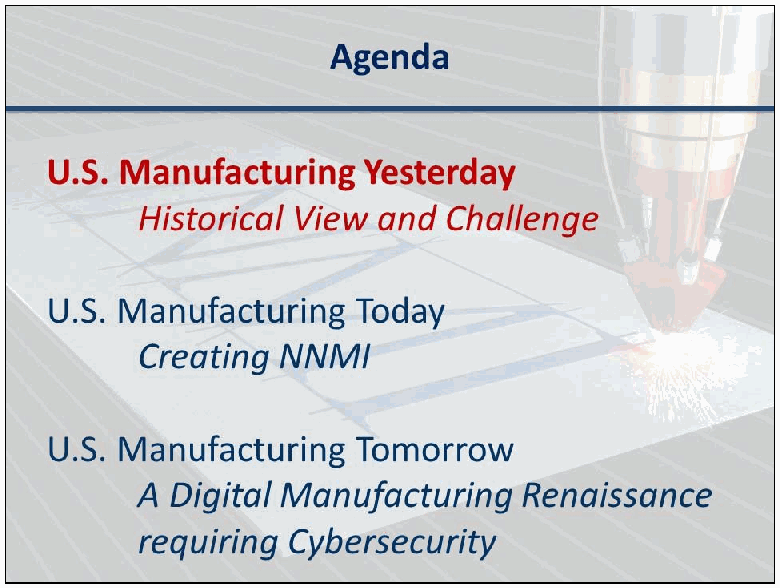
「Agenda」と題したスライドです。「U.S. Manufacturing Yesterday – Historical View and Challenge」（米国製造業の昨日：歴史的経緯と課題）、「U.S. Manufacturing Today – Creating NNMI」（米国製造業の今日：NNMI の創設）、「U.S. Manufacturing Tomorrow – A Digital Manufacturing Renaissance requiring Cybersecurity」（米国製造業の明日：サイバーセキュリティを必要とするデジタル製造の復興）の3項目が並び、1番目の項目が赤で強調されています。
［第三者の画像。第三者の著作物のため、この非公式サイトには掲載していません。原本 PDF を参照してください。］
［第三者の画像。第三者の著作物のため、この非公式サイトには掲載していません。原本 PDF を参照してください。］
![Slide titled "Misperception - Productivity on Employment", with the subtitle "Rising Productivity does not create employment losses" and the note "1965 – 2000 : US Mfg output rises 6x, stable employment"; a "BACKGROUND" tag is on the chart. A line chart of U.S. manufacturing employment in millions (vertical axis 10 to 18 and above) from 1965 - Jan through 2005 - Jan and later: employment fluctuates around a dashed level of about 18 million until about 2000, then falls steeply to below 12 million (a second dashed trend line). Gray bars indicate recessions.](assets/ir-8041/p0014-figure-01.png)
「Misperception - Productivity on Employment」（誤解：生産性と雇用）と題したスライドです。副題は「Rising Productivity does not create employment losses」（生産性の向上は雇用の減少を生まない）で、「1965 – 2000 : US Mfg output rises 6x, stable employment」（1965〜2000年：米国の製造業の生産高は6倍に増加、雇用は安定）と注記され、「BACKGROUND」の札が付いています。1965年1月から2005年1月以降までの米国の製造業の雇用者数（百万人、縦軸は10から18以上）を示す折れ線グラフです。雇用者数は約1,800万人を示す破線の水準付近で推移し、2000年ごろから、別の破線の傾向線を伴って1,200万人未満まで急減しています。灰色の帯は景気後退期を示します。

「Challenge: US losing leadership in Advanced Products」（課題：先端製品で指導的地位を失う米国）と題したスライドです。副題は「U.S. Trade Balance for Advanced Technology Products」（先端技術製品の米国の貿易収支）で、「BACKGROUND」の札が付いています。1988〜2010年の先端技術製品の貿易収支（10億ドル、縦軸−100〜+40）の折れ線グラフで、1990年代は約+15〜+37の黒字、2000〜2001年ごろにほぼゼロとなり、2002年から赤字に転じて最後には約−100まで減少しています。出典は Census Bureau（国勢調査局）です。
［第三者の画像。第三者の著作物のため、この非公式サイトには掲載していません。原本 PDF を参照してください。］
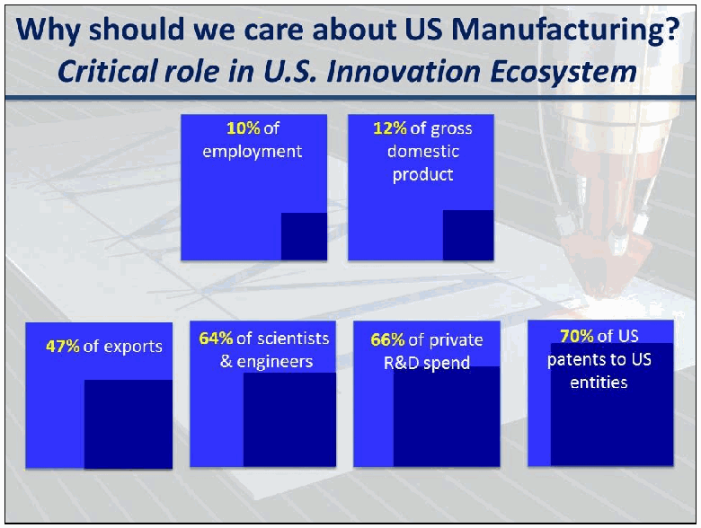
「Why should we care about US Manufacturing? Critical role in U.S. Innovation Ecosystem」（なぜ米国の製造業を重視すべきか：米国のイノベーション・エコシステムでの重要な役割）と題したスライドです。6つの青い箱に、割合に応じた濃い色の領域とともに「10% of employment」（雇用の10%）、「12% of gross domestic product」（国内総生産の12%）、「47% of exports」（輸出の47%）、「64% of scientists & engineers」（科学者・技術者の64%）、「66% of private R&D spend」（民間の研究開発費の66%）、「70% of US patents to US entities」（米国の主体への米国特許の70%）と書かれています。
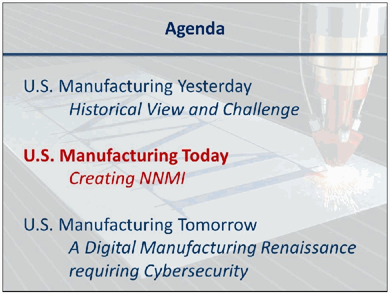
「Agenda」と題したスライドです。「U.S. Manufacturing Yesterday – Historical View and Challenge」（米国製造業の昨日：歴史的経緯と課題）、「U.S. Manufacturing Today – Creating NNMI」（米国製造業の今日：NNMI の創設）、「U.S. Manufacturing Tomorrow – A Digital Manufacturing Renaissance requiring Cybersecurity」（米国製造業の明日：サイバーセキュリティを必要とするデジタル製造の復興）の3項目が並び、2番目の項目が赤で強調されています。
［米国の国章が写っている図。公的な標章のため、この非公式サイトには掲載していません。原本 PDF を参照してください。］
［人物の写真。人物が写っているため、この非公式サイトには掲載していません。原本 PDF を参照してください。］
［人物の写真。人物が写っているため、この非公式サイトには掲載していません。原本 PDF を参照してください。］
［米国の国章が写っている図。公的な標章のため、この非公式サイトには掲載していません。原本 PDF を参照してください。］
［人物の写真。人物が写っているため、この非公式サイトには掲載していません。原本 PDF を参照してください。］
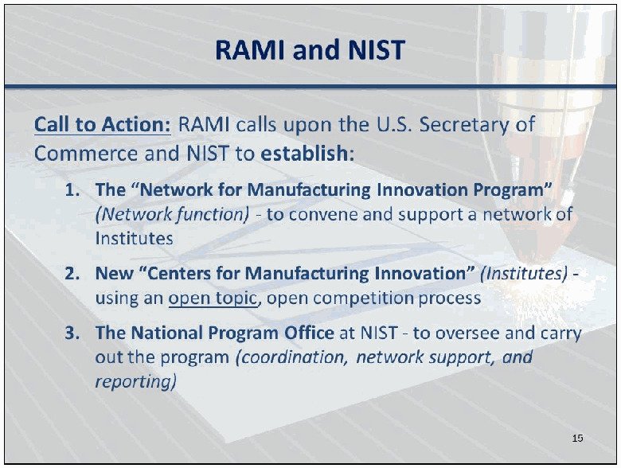
「RAMI and NIST」と題したスライドです。「Call to Action」（行動の呼びかけ）として、RAMI が商務長官と NIST に次の設置を求めていることを示しています。1. 「Network for Manufacturing Innovation Program」（ネットワーク機能。研究所のネットワークを招集・支援する）、2. 新しい「Centers for Manufacturing Innovation」（研究所。テーマを限定しない公開の競争で選ぶ）、3. NIST の National Program Office（調整、ネットワーク支援、報告によってプログラムを監督・実施する）。
［米国商務省の紋章。公的な標章のため、この非公式サイトには掲載していません。原本 PDF を参照してください。］
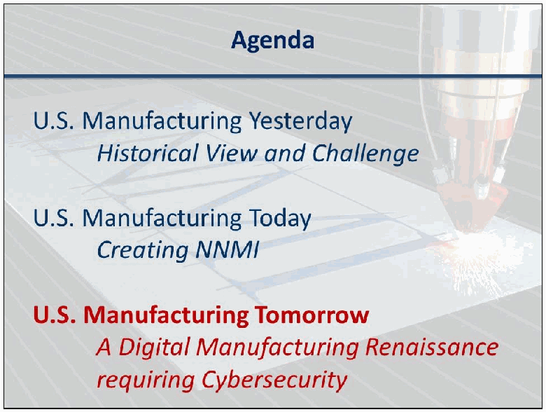
「Agenda」と題したスライドです。「U.S. Manufacturing Yesterday – Historical View and Challenge」（米国製造業の昨日：歴史的経緯と課題）、「U.S. Manufacturing Today – Creating NNMI」（米国製造業の今日：NNMI の創設）、「U.S. Manufacturing Tomorrow – A Digital Manufacturing Renaissance requiring Cybersecurity」（米国製造業の明日：サイバーセキュリティを必要とするデジタル製造の復興）の3項目が並び、3番目の項目が赤で強調されています。
［第三者の画像。第三者の著作物のため、この非公式サイトには掲載していません。原本 PDF を参照してください。］
［人物の写真。人物が写っているため、この非公式サイトには掲載していません。原本 PDF を参照してください。］
［人物の写真。人物が写っているため、この非公式サイトには掲載していません。原本 PDF を参照してください。］
［第三者の画像。第三者の著作物のため、この非公式サイトには掲載していません。原本 PDF を参照してください。］
［第三者の画像。第三者の著作物のため、この非公式サイトには掲載していません。原本 PDF を参照してください。］
![Slide titled "2nd Pilot Institute: Digital Manufacturing & Design Innovation". Text: "$70M public investment, ~$240M match", "Lead: UI Labs", "Hub location: Chicago, Illinois", with bullets "41 Companies", "23 Universities and Labs", and "9 Other Organizations". A map graphic with a key (Industry and University Support; State Support) and labels MANUFACTURING, DEMONSTRATION SITE, SUPERCOMPUTING, and NEW USERS. An illustration of a factory with growing data volumes: 152,000 samples per second, 9 MILLION samples per minute, 545 MILLION samples per hour, 4 BILLION samples per shift, 13 BILLION samples per day, and 4 TRILLION samples per year. "Mission: Establish a state-of-the-art proving ground that links IT tools, standards, models, sensors, controls, practices and skills, and transition these tools to the U.S. design & manufacturing base for full-scale application". "Over 3:1 Industry Cost Share".](assets/ir-8041/p0023-figure-01.png)
「2nd Pilot Institute: Digital Manufacturing & Design Innovation」（2番目の試行研究所：デジタル製造・設計イノベーション）と題したスライドです。「$70M public investment, ~$240M match」（公的投資7,000万ドル、約2億4,000万ドルの拠出）、「Lead: UI Labs」、「Hub location: Chicago, Illinois」と書かれ、「41 Companies」（41社）、「23 Universities and Labs」（23の大学・研究所）、「9 Other Organizations」（その他9組織）の箇条書きがあります。「Industry and University Support」（産業界・大学の支援）と「State Support」（州の支援）を示す凡例付きの地図と、MANUFACTURING、DEMONSTRATION SITE、SUPERCOMPUTING、NEW USERS の札があります。工場の絵には、データ量が毎秒152,000サンプル、毎分900万サンプル、毎時5億4,500万サンプル、1交代あたり40億サンプル、1日あたり130億サンプル、1年あたり4兆サンプルと増えていく様子が示されています。「Mission」として、IT ツール・標準・モデル・センサー・制御・慣行・技能を結び付ける最先端の実証の場を設け、これらのツールを米国の設計・製造の基盤へ本格適用のために移転すると書かれ、「Over 3:1 Industry Cost Share」（産業界の費用負担比率は3対1を超える）とあります。
［第三者の画像。第三者の著作物のため、この非公式サイトには掲載していません。原本 PDF を参照してください。］
［第三者の画像。第三者の著作物のため、この非公式サイトには掲載していません。原本 PDF を参照してください。］
［第三者の画像。第三者の著作物のため、この非公式サイトには掲載していません。原本 PDF を参照してください。］
［第三者の画像。第三者の著作物のため、この非公式サイトには掲載していません。原本 PDF を参照してください。］
［人物の写真。人物が写っているため、この非公式サイトには掲載していません。原本 PDF を参照してください。］
［人物の写真。人物が写っているため、この非公式サイトには掲載していません。原本 PDF を参照してください。］
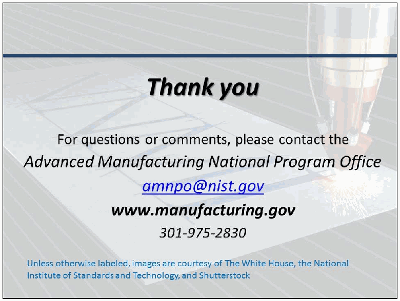
締めくくりのスライドです。「Thank you. For questions or comments, please contact the Advanced Manufacturing National Program Office amnpo@nist.gov www.manufacturing.gov 301-975-2830」とあります。小さな文字で、「Unless otherwise labeled, images are courtesy of The White House, the National Institute of Standards and Technology, and Shutterstock」と記されています。
Presentation 1: An Analysis of Cyber Physical Vulnerabilities in Additive Manufacturing
発表 1: An Analysis of Cyber Physical Vulnerabilities in Additive Manufacturing
Christopher B. Williams
Associate Professor, Virginia Tech Department of Mechanical Engineering
Christopher B. Williams
バージニア工科大学 機械工学科 准教授
Key Discussion Points:
主な議論のポイント:
•Current research in Cyber Physical Systems is focused on Supervisory Control and Data Acquisition (SCADA) systems, but Additive Manufacturing is different.
•サイバーフィジカルシステムに関する現在の研究は、監視制御およびデータ収集（SCADA）システムに焦点を当てていますが、積層造形は異なります。
•Researchers were able to intercept a job initialization file and decode it, allowing attackers to potentially alter printer parameters mid-print. The STL (or newer AMF) standard files are especially vulnerable to attacks which alter a design.
•研究者は、ジョブ初期化ファイルを傍受して解読することができ、これにより攻撃者が造形の途中でプリンターのパラメーターを変更できる可能性があります。STL（またはより新しい AMF）の標準ファイルは、設計を改変する攻撃に対してとりわけ脆弱です。
•The presenters described an experiment run on students at Virginia Tech. Seven groups of students were given an “extra credit” assignment to design a standard dog bone, print it, and test it. An exploit was easily developed which inserted a void in the STL file. Students failed to recognize any anomalies prior to printing and testing. No students correctly diagnosed the anomalies as a cybersecurity problem.
•発表者は、バージニア工科大学の学生を対象に行った実験について説明しました。7 つの学生グループに、標準的なドッグボーン形状を設計し、造形し、試験するという「加点」課題が与えられました。STL ファイルに空洞を挿入するエクスプロイトが容易に開発されました。学生は、造形と試験の前に異常を何も認識できませんでした。異常をサイバーセキュリティの問題として正しく診断した学生はいませんでした。
•Recommendations include improved quality control processes, hashing, improved process monitoring, and operator training.
•推奨事項には、品質管理プロセスの改善、ハッシュ化、プロセス監視の改善、オペレーターのトレーニングが含まれます。
•Some attendees commented that other forms of manufacturing have similar vulnerabilities.
•一部の参加者は、他の形態の製造にも同様の脆弱性があるとコメントしました。
•Cybersecurity solutions should be built under the assumption that manufacturers are not cybersecurity experts.
•サイバーセキュリティのソリューションは、製造者がサイバーセキュリティの専門家ではないことを前提として構築すべきです。
[Excerpt from Extended abstract and slides by Christopher B. Williams, © Christopher B. Williams — not reproduced on this unofficial site]
［Extended abstract and slides by Christopher B. Williams からの引用。第三者（Christopher B. Williams）の著作物のため、この非公式サイトには掲載していません。原本 PDF を参照してください。］
Presentation 2: Applying and Assessing Cybersecurity Controls for Direct Digital Manufacturing Systems
発表 2: Applying and Assessing Cybersecurity Controls for Direct Digital Manufacturing Systems
Scott Zimmerman, CISSP-ISSEP
Principal IT Advisor, Concurrent Technologies Corporation (CTC)
Scott Zimmerman, CISSP-ISSEP
Concurrent Technologies Corporation（CTC）主席 IT アドバイザー
Dominick Glavach, CISSP, GCIH
Principle Fellow, Information Systems Security Engineer, CTC
Dominick Glavach, CISSP, GCIH
主席フェロー、情報システムセキュリティエンジニア、CTC
Key Discussion Points:
主な議論のポイント:
•Digitization of manufacturing increases the risks for theft, disruption, and sabotage. There are vulnerabilities in preproduction software, data storage and data transfers, the StereoLythography (STL) file format, printer components, and engineering / production practices.
•製造のデジタル化は、窃取、妨害、サボタージュのリスクを高めます。脆弱性は、生産前のソフトウェア、データの保存と転送、ステレオリソグラフィー（STL）ファイル形式、プリンターの構成部品、および設計・生産の実務にあります。
•The presenters discussed their experience with obtaining a 3D printer and the cybersecurity challenges experienced when setting it up.
•発表者は、3D プリンターを入手した経験と、その設定時に直面したサイバーセキュリティ上の課題について話しました。
•Many AM machines contain old firmware, cannot be patched easily, and have poor authentication processes. It was commented that this is not unusual for manufacturing systems.
•多くの AM 機器には古いファームウェアが含まれており、容易にパッチを適用できず、認証プロセスも貧弱です。これは製造システムでは珍しいことではないとコメントされました。
•The AM process is also complex, variable / changeable, and tends to leave a lot of residual data in various places, making cybersecurity without interfering with functionality a challenge.
•AM のプロセスは、複雑で、変動 / 変化しやすく、さまざまな場所に多くの残留データを残しがちでもあるため、機能を妨げずにサイバーセキュリティを確保することは困難です。
•There is a significant opportunity to be proactive rather than reactive regarding cybersecurity due to the nature of the technology and the state of the industry. The authors presented several recommendations for cybersecurity controls and highlighted the value of traditional cybersecurity controls such as firewalls.
•この技術の性質と業界の現状を踏まえると、サイバーセキュリティについて事後対応ではなく先手を打つ大きな機会があります。著者らは、サイバーセキュリティ管理策に関するいくつかの推奨事項を示し、ファイアウォールなどの従来のサイバーセキュリティ管理策の価値を強調しました。
•Participants stressed the need for focusing on people – a recent attack was described that began with a phishing scam. One participant commented that manufacturers and users are not security aware, yet DDM supports minimal digital knowledge - any security solution needs to be simple and usable.
•参加者は、人に焦点を当てる必要性を強調し、フィッシング詐欺から始まった最近の攻撃について説明しました。ある参加者は、製造者と利用者はセキュリティ意識が高くない一方、DDM の利用に必要なデジタル知識は最小限であるため、あらゆるセキュリティソリューションは簡単で使いやすいものである必要があるとコメントしました。
[Excerpt from Abstract and slides by Concurrent Technologies Corporation, © Concurrent Technologies Corporation — not reproduced on this unofficial site]
［Abstract and slides by Concurrent Technologies Corporation からの引用。第三者（Concurrent Technologies Corporation）の著作物のため、この非公式サイトには掲載していません。原本 PDF を参照してください。］
Presentation 3: Cybersecurity for Advanced Manufacturing – Securing the Digital Thread
発表 3: 先進製造業のサイバーセキュリティ – デジタルスレッドの保護
Dr. Michael F. McGrath
National Defense Industrial Association (NDIA) Manufacturing Division
Dr. Michael F. McGrath
National Defense Industrial Association（NDIA）製造部会
Key Discussion Points:
主な議論のポイント:
•The intersection between cyber/cybersecurity and manufacturing is critical.
•サイバー / サイバーセキュリティと製造業の交点は重要です。
•The presenter described three concerns expressed by manufacturers: theft, alteration, and disruption. These closely mirror the traditional Confidentiality, Integrity, and Availability (CIA) security objectives..
•発表者は、製造者が示した 3 つの懸念、すなわち窃取、改ざん、妨害について説明しました。これらは、従来の機密性、完全性、可用性（CIA）というセキュリティ目標とよく対応しています。
•IT solutions don’t always fit the manufacturing world. Manufacturers often have a mix of old and new equipment. The new can be secured, but securing the old is much more difficult, and the old has to work with the new.
•IT ソリューションは、製造の世界に常に適合するとは限りません。製造者は、古い機器と新しい機器を混在させて持っていることがよくあります。新しいものは保護できますが、古いものの保護ははるかに困難であり、古いものは新しいものと連携して動作しなければなりません。
•Culture change is necessary. Some participants indicated the industry has to change – vendors will say anything to sell a product; manufacturing CEOs place productivity over security, and CISOs don’t have much say regarding the manufacturing operations.
•文化の変革が必要です。一部の参加者は、業界が変わらなければならないと指摘しました。ベンダーは製品を売るためなら何でも言い、製造業の CEO はセキュリティより生産性を優先し、CISO は製造業務についてあまり発言権を持っていません。
•Requirements are beginning to be seen – e.g. Defense Acquisition Regulations System (DFARS) clause which requires flow down of responsibility to sub-suppliers.
•要件が見られ始めています。たとえば、下請け供給者への責任の引き継ぎを求める国防調達規則システム（DFARS）の条項があります。
•Some companies may be especially vulnerable as they may not recognize a risk. Interconnected supply chains with a lot of data sharing may be especially vulnerable if they use small company suppliers who don’t recognize cybersecurity risks in manufacturing.
•リスクを認識していない可能性があるため、とりわけ脆弱になりうる企業もあります。多くのデータ共有を伴う相互接続されたサプライチェーンは、製造業におけるサイバーセキュリティのリスクを認識していない小規模企業の供給者を利用している場合、とりわけ脆弱になる可能性があります。
•Manufacturing presents a unique set of problems combining cyber plus Industrial Control System (ICS) vulnerabilities. Existing cybersecurity controls may not be sufficient in a DDM environment. The problem is not unique to AM, but AM presents a significant opportunity to build security in.
•製造業には、サイバーと産業用制御システム（ICS）の脆弱性が組み合わさった、特有の問題群があります。既存のサイバーセキュリティ管理策は、DDM の環境では十分でない場合があります。この問題は AM に固有のものではありませんが、AM はセキュリティを組み込む大きな機会をもたらします。
•An NDIA working group regarding cybersecurity in manufacturing is currently being formed.
•製造業のサイバーセキュリティに関する NDIA のワーキンググループが、現在設立されつつあります。
[Excerpt from Abstract and slides by Michael McGrath (NDIA), © NDIA — not reproduced on this unofficial site]
［Abstract and slides by Michael McGrath (NDIA) からの引用。第三者（NDIA）の著作物のため、この非公式サイトには掲載していません。原本 PDF を参照してください。］
Panel: Opportunities for Secure 3D Printing
パネル: セキュアな3Dプリンティングの機会
Robert Zollo (moderator)
President, Avante Technology
Robert Zollo（モデレーター）
Avante Technology 社長
Dr. Claire Vishik
Trust and Security Technology and Policy Director, Intel Corporation
Dr. Claire Vishik
Intel Corporation トラスト・セキュリティ技術・政策ディレクター
Andre Wegner
Founder and CEO, Authentize
Andre Wegner
Authentize 創設者兼 CEO
Key Discussion Points:
主な議論のポイント:
•There are many opportunities for building security into the design of DDM machines abound.
•DDM 機器の設計にセキュリティを組み込む機会は数多くあります。
•During its development, security wasn’t high on the list of priorities for the ISO Additive Manufacturing File Format (AMF)[3], but it has “hints” of security – there is a space in the metadata where security could be inserted. In the future, it may be added in.
•ISO の Additive Manufacturing File Format（AMF）[3] の開発中には、セキュリティは優先事項の上位にありませんでしたが、セキュリティの「ヒント」はあります。メタデータの中に、セキュリティを挿入できる領域があります。将来的には、それが追加されるかもしれません。
•The Cyber Physical Systems (CPS) Public Working Group (PWG) considers manufacturing devices like 3D printers as cyber physical systems. AM devices are similar in that they use the same protocols and firmware.
•Cyber Physical Systems（CPS）Public Working Group（PWG）は、3D プリンターのような製造機器をサイバーフィジカルシステムとみなしています。AM 機器は、同じプロトコルとファームウェアを使用する点で3Dプリンターと類似しています。
•There are privacy concerns when considering cybersecurity controls. For example, putting in automatic, machine-generated ID numbers for asset inventory or forensic purposes could lead back to a particular printer and a particular person.
•サイバーセキュリティ管理策を検討する際には、プライバシーの懸念があります。たとえば、資産管理やフォレンジックの目的で、機械が自動生成する ID 番号を組み込むと、特定のプリンターや特定の人物にたどり着くことがありえます。
•One of the biggest impacts of AM may be on the supply chain. Distributed manufacturing with localized production can dramatically reduce logistics costs. AM provides an opportunity to enhance the resilience and security of the supply chain in ways not available before.
•AM の最大の影響の 1 つは、サプライチェーンに及ぶかもしれません。現地生産による分散型の製造は、物流コストを劇的に削減できます。AM は、これまでにない方法でサプライチェーンのレジリエンスとセキュリティを強化する機会をもたらします。
•The biggest obstacles to cybersecurity in manufacturing include: awareness; the culture; uninformed decision makers; loss of process control; people and organizations not working together; not willing to invest in security.
•製造業におけるサイバーセキュリティの最大の障害には、認識、文化、情報を持たない意思決定者、プロセス制御の喪失、人や組織が協力しないこと、セキュリティに投資する意思がないことが含まれます。
•Attendees disagreed as to whether the economy would need to provide an incentive for organizations to include cybersecurity in their processes. Some attendees stated that customers desire more secure solutions to protect their intellectual property and systems. Other attendees disagreed but were uncertain whether the market could be incentivized to be proactive or if solutions would always be reactionary.
•参加者の意見は、組織がプロセスにサイバーセキュリティを取り入れるよう、経済が動機付けを提供する必要があるかどうかについて分かれました。一部の参加者は、顧客は知的財産やシステムを保護するため、より安全なソリューションを望んでいると述べました。他の参加者は同意しませんでしたが、市場が先手を打つよう動機付けられるのか、それともソリューションは常に事後対応になるのか、確信が持てませんでした。
•Attendees and the panel stated that there were no on-going activities regarding security standardization. It was noted that standards reduce costs significantly in the semiconductor and other fields, but the standards processes around AM devices have just begun and attendees were unsure how security standards could be applied.
•参加者とパネリストは、セキュリティの標準化に関する進行中の活動はないと述べました。標準は半導体などの分野でコストを大幅に削減することが指摘されましたが、AM 機器に関する標準化のプロセスは始まったばかりであり、参加者はセキュリティ標準をどのように適用できるのか確信が持てませんでした。
[Excerpt from Abstract and slides by Robert Zollo, © Avante Technology, LLC — not reproduced on this unofficial site]
［Abstract and slides by Robert Zollo からの引用。第三者（Avante Technology, LLC）の著作物のため、この非公式サイトには掲載していません。原本 PDF を参照してください。］
Presentation by Claire Vishik:
Claire Vishik による発表:
［NIST のロゴが写っている図。公的な標章のため、この非公式サイトには掲載していません。原本 PDF を参照してください。］
「About CPS PWG」（CPS PWG について）と書かれた区切りのスライドです。
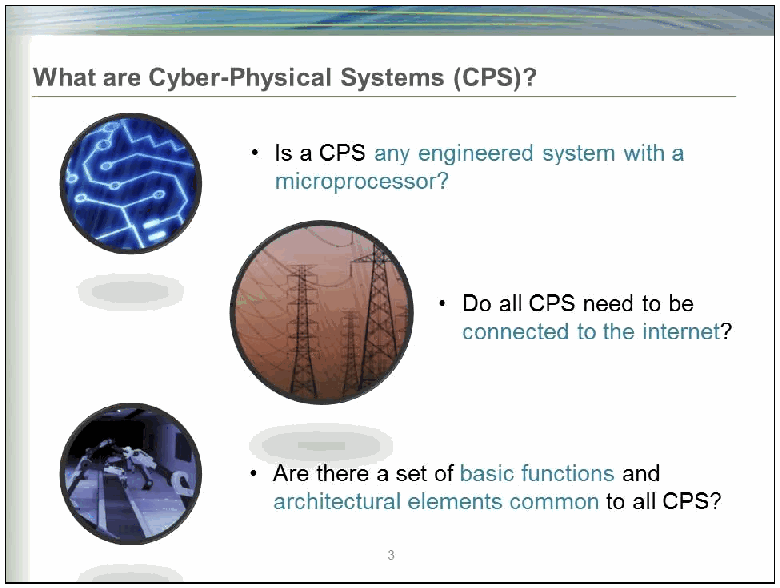
「What are Cyber-Physical Systems (CPS)?」（サイバーフィジカルシステムとは何か）と題したスライドです。3つの円形の画像（回路の模様、送電鉄塔、ロボット）の横に、「マイクロプロセッサーを持つ工学的なシステムはすべて CPS か」「すべての CPS はインターネットに接続する必要があるか」「すべての CPS に共通する基本機能とアーキテクチャーの要素の組はあるか」の3つの問いが書かれています。
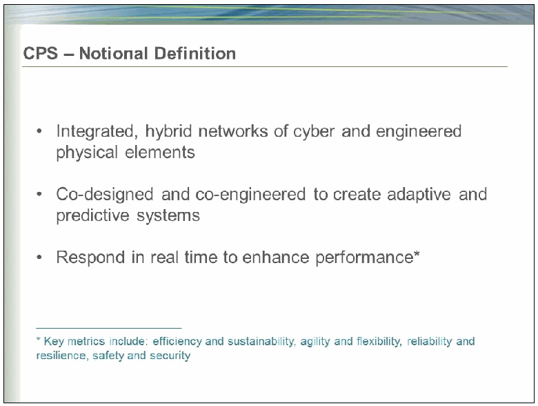
「CPS – Notional Definition」（CPS の概念的な定義）と題したスライドです。「サイバーの要素と工学的な物理要素の統合されたハイブリッドなネットワーク」「適応的・予測的なシステムを作るために共同で設計・開発される」「性能を高めるために実時間で応答する*」の3項目があり、脚注に「* 主な指標は、効率と持続可能性、俊敏性と柔軟性、信頼性とレジリエンス、安全とセキュリティ」とあります。
［NIST のロゴが写っている図。公的な標章のため、この非公式サイトには掲載していません。原本 PDF を参照してください。］
![Slide titled "CPS PWG Goal and Deliverables" with three chevrons on a timeline. Winter 2014: "Initial Report from each subgroup" – Definition, Vocabulary, Reference Architecture; Use Cases; Cybersecurity & Privacy; Timing & Synchronization; Data Interoperability. Spring 2015: "CPS “Framework”" – Integrate subgroup reports; Publish as white paper on www.cpspwg.org. Summer 2015: "CPS Technology Roadmap" – Identify opportunities for a coordinated effort on key technical challenges from each subgroup area and across CPS.](assets/ir-8041/p0100-figure-02.png)
「CPS PWG Goal and Deliverables」（CPS PWG の目標と成果物）と題したスライドです。時系列の3つの矢羽根があり、2014年冬は「各サブグループの初期報告」（定義・用語・参照アーキテクチャー、ユースケース、サイバーセキュリティとプライバシー、タイミングと同期、データの相互運用性）、2015年春は「CPS “Framework”」（サブグループの報告を統合し、www.cpspwg.org でホワイトペーパーとして公開）、2015年夏は「CPS Technology Roadmap」（各サブグループの分野と CPS 全体にわたる主要な技術課題について、協調した取り組みの機会を特定）です。

「CPS Cybersecurity and Privacy Subgroup」（CPS のサイバーセキュリティとプライバシーのサブグループ）と題したスライドです。「Goal/Objectives」（目標・目的）として、CPS に固有の課題・特性・機会の特定、CPS に適したサイバーセキュリティの目的（機密性、完全性、可用性など）の策定、サイバーセキュリティが含まれ対処されるよう CPS の参照アーキテクチャー全体に貢献すること、参照アーキテクチャーの構成要素のセキュリティとプライバシーの要件の特定、の4項目があります。
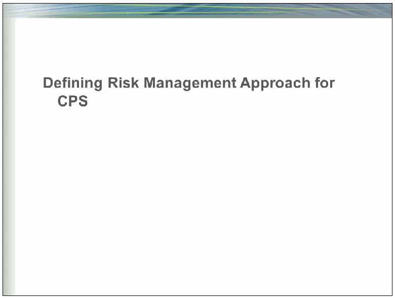
「Defining Risk Management Approach for CPS」（CPS のリスク管理の手法の定義）と書かれた区切りのスライドです。
![Slide titled "Notional Draft NIST CPS Reference Architecture". A layered block diagram: horizontal layers from bottom to top are Physical Environment, Physical System, Sensors and Actuators, Control System(s), Data Analytics, Modeling / Optimization / Simulation, and Business & User Goals; vertical cross-cutting layers are Interoperability; Security: Cybersecurity, Physical, Safety, & … (the rest is hidden by the perspective); Human-System Interaction; Data & Data Services; Networking & Communications; and Inter-System Services. Bullets: "Functional, multi-stack architecture"; "All layers should be co-designed in the context of the Physical Environment"; "Management function, not depicted, provides oversight and ensures coordination and composability".](assets/ir-8041/p0102-figure-01.png)
「Notional Draft NIST CPS Reference Architecture」（NIST の CPS 参照アーキテクチャーの概念的な草案）と題したスライドです。層を重ねたブロック図で、横の層は下から Physical Environment、Physical System、Sensors と Actuators、Control System(s)、Data Analytics、Modeling・Optimization・Simulation、Business & User Goals です。縦に全体を貫く層は Interoperability、Security: Cybersecurity, Physical, Safety, & …（以降は奥行きで隠れて読めません）、Human-System Interaction、Data & Data Services、Networking & Communications、Inter-System Services です。箇条は「機能的な多層のアーキテクチャー」「すべての層を物理環境の文脈で共同設計すべき」「図示していない管理機能が監督を行い、調整と組み合わせ可能性を確保する」です。
![Slide titled "Some Properties of CPS: very early work". Bullets: "Need for resilience, reliability, and safety in addition to security & privacy"; "Wide range of operational contexts"; "Lifecycle challenges, including differing lifespans"; "“Systems of systems” resulting in inherent complexity"; "Impact on physical world"; "Time sensitive"; "Resource constrained elements"; "“Always on” requirements". Five triangles arranged in a ring are labeled Safety, Reliability, Privacy, Security, and Resilience.](assets/ir-8041/p0102-figure-02.png)
「Some Properties of CPS: very early work」（CPS のいくつかの特性：ごく初期の検討）と題したスライドです。箇条は、セキュリティとプライバシーに加えてレジリエンス・信頼性・安全が必要、運用の文脈が多様、寿命の違いを含むライフサイクルの課題、本質的な複雑さを生む「システムのシステム」、物理世界への影響、時間に敏感、資源が限られた要素、「常時稼働」の要件、です。輪の形に並んだ5つの三角形に Safety、Reliability、Privacy、Security、Resilience と書かれています。
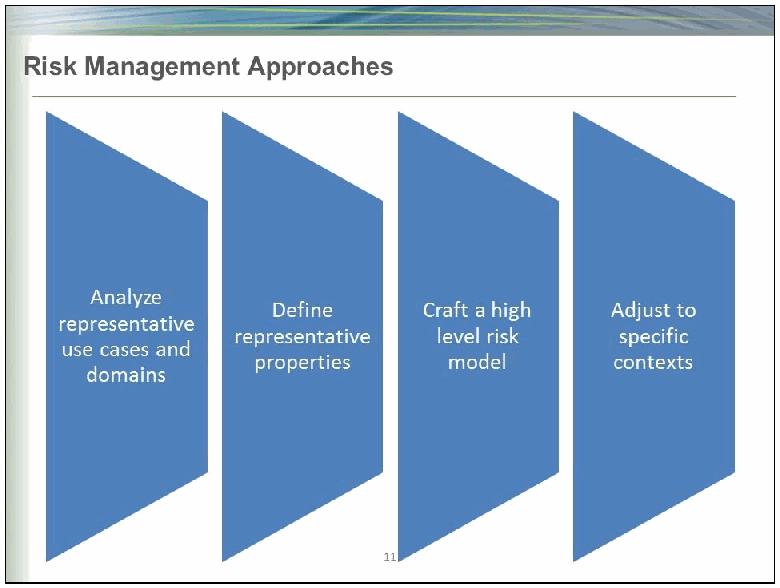
「Risk Management Approaches」（リスク管理の手法）と題したスライドです。4つの矢羽根の図形が順に並び、「代表的なユースケースと領域を分析する」「代表的な特性を定義する」「高水準のリスクモデルを作る」「特定の文脈に合わせて調整する」と書かれています。
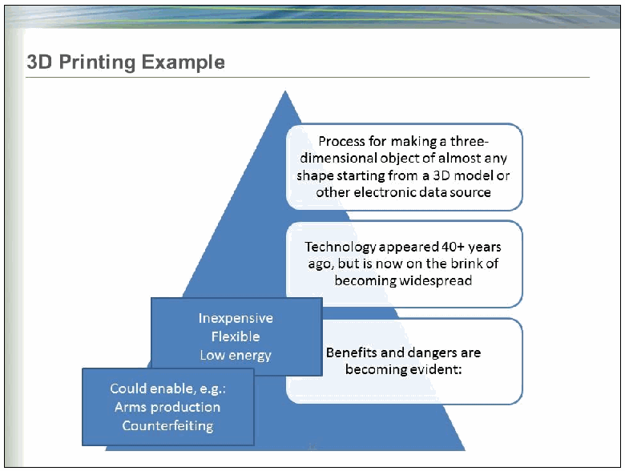
「3D Printing Example」（3D 印刷の例）と題したスライドです。三角形の上に、「3D モデルなどの電子データからほぼあらゆる形の三次元の物体を作る工程」「40年以上前に登場した技術だが、いまや普及の瀬戸際にある」「利点と危険が明らかになりつつある」、利点として「安価／柔軟／低エネルギー」、危険として「例：武器の製造／偽造を可能にしうる」と書かれた箱があります。
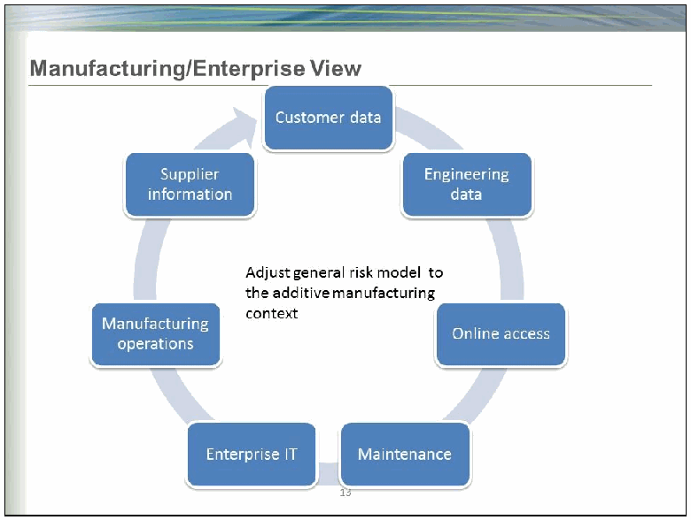
「Manufacturing/Enterprise View」（製造・企業の視点）と題したスライドです。Customer data、Engineering data、Online access、Maintenance、Enterprise IT、Manufacturing operations、Supplier information の箱が円環に並び、中央に「一般的なリスクモデルを積層造形の文脈に合わせて調整する」と書かれています。
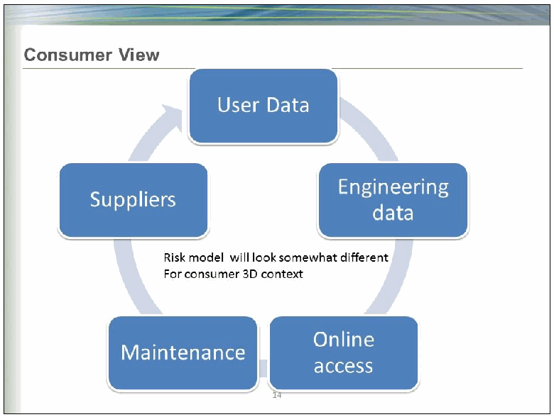
「Consumer View」（消費者の視点）と題したスライドです。User Data、Engineering data、Online access、Maintenance、Suppliers の箱が円環に並び、中央に「消費者の 3D の文脈ではリスクモデルはやや異なる」と書かれています。
「Thank you!」「Questions?」と書かれたスライドです。
［NIST のロゴが写っている図。公的な標章のため、この非公式サイトには掲載していません。原本 PDF を参照してください。］
Presentation by Andre Wegner:
Andre Wegner による発表:
3 Summary of Attendee Perceptions
3 参加者の受け止め方の要約
This section summarizes attendee perceptions as gathered throughout the symposium, including during presentations and through information gathering exercises. At the start of the symposium, attendees were asked to anonymously list as many thoughts / items as they could under each of the following categories:
本節は、発表中や情報収集の演習を通じてシンポジウム全体で集められた参加者の受け止め方を要約します。シンポジウムの開始時に、参加者は、次の各カテゴリについて、思いつく限り多くの考え / 項目を匿名で挙げるよう求められました。
•Risks;
•リスク。
•Challenges;
•課題。
•Existing Solutions, and
•既存のソリューション。
•Potential / Theoretical Solutions.
•潜在的 / 理論的なソリューション。
20 percent of attendees submitted their responses, listed in Appendix A.
参加者の 20 パーセントが回答を提出し、その回答は付録 A に掲載されています。
In addition, during the closing session, attendees were asked to identify thoughts / items under the following categories:
さらに、締めくくりのセッションでは、参加者は次のカテゴリについて、考え / 項目を挙げるよう求められました。
•Standards;
•標準。
•Guidance;
•ガイダンス。
•Tools, and
•ツール。
•Gaps.
•ギャップ。
The responses from this exercise are listed in Appendix B.
この演習の回答は、付録 B に掲載しています。
Several attendees identified culture / humans as a significant risk or challenge to the cybersecurity of DDM, and to cybersecurity in general. Cybersecurity education at all levels of a manufacturing organization was desired. Changing the priorities and culture of manufacturing organizations is challenging due to a lack of understanding of cybersecurity risks and benefits. Business cases or examples were desired. A few attendees mentioned legal requirements as a potential solution and there were a few comments questioning who bears the burden of the risk of an attack – the IP owners, the vendor(s), or the government.
数名の参加者が、文化 / 人間を、DDM のサイバーセキュリティ、そして一般にサイバーセキュリティにとっての重大なリスクまたは課題として挙げました。製造組織のあらゆる階層でのサイバーセキュリティ教育が望まれました。製造組織の優先事項と文化を変えることは、サイバーセキュリティのリスクと利点への理解が不足しているため、困難です。ビジネスケースや事例が望まれました。少数の参加者が、潜在的な解決策として法的要件を挙げ、攻撃のリスクの負担を誰が負うのか、すなわち知的財産の所有者、ベンダー、あるいは政府なのかを問うコメントも少数ありました。
Threats to the integrity of designs and systems were a common thread in responses. Some mentioned confidentiality of intellectual property as a concern and only a few identified availability concerns. Software vulnerabilities were called out a few times, but most responses focused on the final product. The nature of the digital supply chain was identified several times as a challenge with attendees specifically calling out the volume and types of data to be protected in a distributed and open manufacturing environment.
設計やシステムの完全性に対する脅威は、回答に共通する話題でした。知的財産の機密性を懸念事項として挙げた参加者もおり、可用性の懸念を挙げたのはごく少数でした。ソフトウェアの脆弱性は数回指摘されましたが、回答の大半は最終製品に焦点を当てていました。デジタルサプライチェーンの性質は、複数回にわたり課題として挙げられ、参加者は、分散型でオープンな製造環境で保護すべきデータの量と種類を具体的に挙げました。
Quality control and event detection capabilities were desired. A few attendees mentioned the use of encryption throughout the manufacturing process as a potential solution. Other potential / desired technical capabilities identified by respondents included: distributed network security solutions, authentication mechanisms, automated and real-time monitoring and control, embedded security solutions, and residual data removal tools. It was stressed in responses and throughout the symposium that any technical solution must be simple and easy and preferably all-encompassing– “an easy button”.
品質管理とイベント検知の能力が望まれました。数名の参加者が、潜在的な解決策として、製造プロセス全体での暗号化の使用を挙げました。回答者が挙げたその他の潜在的または望まれる技術的能力には、分散ネットワークのセキュリティソリューション、認証メカニズム、自動化されたリアルタイムの監視と制御、組み込みのセキュリティソリューション、残留データの削除ツールがありました。回答およびシンポジウム全体を通じて、あらゆる技術的ソリューションは簡単で使いやすく、できれば包括的な、つまり「ボタン一つで使える」ものがよいと強調されました。
Another common thread in responses was the suggestion for guidelines specific to DDM based on NIST SP 800-53 [1], the NIST Cybersecurity Framework [2], existing ISO standards, and industry best practices. Technical standards, such as protocols and formats, were also mentioned by several as representing a gap, or opportunity, for improving cybersecurity. Attendees provided the following list of standards and guidelines as providing a potential foundation for future DDM-specific cybersecurity standards and guidelines.
回答に共通するもう 1 つの話題は、NIST SP 800-53 [1]、NIST Cybersecurity Framework [2]、既存の ISO 標準、および業界のベストプラクティスに基づく、DDM に特化したガイドラインの提案でした。プロトコルや形式などの技術標準も、サイバーセキュリティを向上させるうえでのギャップまたは機会であるとして、複数の参加者が挙げました。参加者は、将来の DDM に特化したサイバーセキュリティ標準およびガイドラインの潜在的な基盤となるものとして、次の標準とガイドラインの一覧を挙げました。
•IEC 62264-1:2013 - Enterprise-control system integration -- Part 1: Models and terminology [4]
•IEC 62264-1:2013 - Enterprise-control system integration -- Part 1: Models and terminology [4]
•ISA-95, Enterprise-Control System Integration [5]
•ISA-95, Enterprise-Control System Integration [5]
•ISO / ASTM52915 – 13, Standard Specification for Additive Manufacturing File Format (AMF) Version 1.1 [3]
•ISO / ASTM52915 – 13, Standard Specification for Additive Manufacturing File Format (AMF) Version 1.1 [3]
•ISO 10303 -242:2014, , Industrial automation systems and integration -- Product data representation and exchange -- Part 242: Application protocol: Managed model-based 3D engineering [6]
•ISO 10303 -242:2014, , Industrial automation systems and integration -- Product data representation and exchange -- Part 242: Application protocol: Managed model-based 3D engineering [6]
•ISO 14306:2012, Industrial automation systems and integration -- JT file format specification for 3D visualization [7]
•ISO 14306:2012, Industrial automation systems and integration -- JT file format specification for 3D visualization [7]
•ISO 14739-1:2014, Document management -- 3D use of Product Representation Compact (PRC) format -- Part 1: PRC 10001 [8]
•ISO 14739-1:2014, Document management -- 3D use of Product Representation Compact (PRC) format -- Part 1: PRC 10001 [8]
•ISO/IEC 27000:2014, Information technology -- Security techniques -- Information security management systems -- Overview and vocabulary [9]
•ISO/IEC 27000:2014, Information technology -- Security techniques -- Information security management systems -- Overview and vocabulary [9]
•NAS 9924, Cybersecurity Baseline [10]
•NAS 9924, Cybersecurity Baseline [10]
•NIACAP-DIACAP (now obsolete, see DoDI 8510.01 and [11] CNSSP No. 22[12])
•NIACAP-DIACAP（現在は廃止。DoDI 8510.01 と [11] CNSSP No. 22[12] を参照）
•NIST Framework for Improving Critical Infrastructure Cybersecurity [2]
•NIST Framework for Improving Critical Infrastructure Cybersecurity [2]
•NIST IR 8023, Risk Management for Replication Devices [13]
•NIST IR 8023, Risk Management for Replication Devices [13]
•NIST SP 800-53 Revision 4, Security and Privacy Controls for Federal Information Systems and Organizations [1]
•NIST SP 800-53 Revision 4, Security and Privacy Controls for Federal Information Systems and Organizations [1]
•NIST SP 800-82, Revision 2, Guide to Industrial Control Systems (ICS) Security [14]
•NIST SP 800-82, Revision 2, Guide to Industrial Control Systems (ICS) Security [14]
4 Conclusions
4 結論
Direct Digital Manufacturing is poised to revolutionize the manufacturing industry. A collaborative public and private approach is necessary to improving the cybersecurity of DDM processes and technology. This symposium was intended to be a step in that direction.
直接デジタル製造は、製造業に革命を起こそうとしています。DDM のプロセスと技術のサイバーセキュリティを向上させるには、官民の協働によるアプローチが必要です。本シンポジウムは、その方向への一歩となることを意図したものでした。
Although the presenters were from diverse backgrounds representing a variety of viewpoints, each made similar points:
講演者は多様な背景を持ち、さまざまな観点を代表していましたが、それぞれが次のように似通った点を指摘しました。
•Cybersecurity risks to DDM are very real;
•DDM に対するサイバーセキュリティのリスクは、きわめて現実的です。
•Cybersecurity threats are the Achilles heel of the current manufacturing revolution;
•サイバーセキュリティの脅威は、現在の製造業革命のアキレス腱です。
•There is a real opportunity to make the manufacturing supply chain more secure than it has ever been, and
•製造サプライチェーンを、これまでになく安全にする現実的な機会があります。
•The time to build cybersecurity in to the DDM process is now.
•サイバーセキュリティを DDM のプロセスに組み込む時期は、今です。
Attendees identified several risks and opportunities for building cybersecurity into DDM. Many attendees identified the integrity of designs and machines as a major risk while a few also mentioned intellectual property concerns. Gaps and potential solutions were grouped into four categories:
参加者は、サイバーセキュリティを DDM に組み込むためのリスクと機会をいくつか挙げました。多くの参加者が、設計と機器の完全性を主要なリスクとして挙げ、少数は知的財産の懸念にも言及しました。ギャップと潜在的な解決策は、次の 4 つのカテゴリに分類されました。
•Education / awareness of risks and cost/benefits;
•リスクおよびコスト / 利益についての教育 / 認識。
•Technical solutions such as encryption capabilities and network monitoring;
•暗号化機能やネットワーク監視などの技術的ソリューション。
•Technical standards such as a security option in existing standard file formats, and
•既存の標準ファイル形式へのセキュリティオプションの追加などの技術標準。
•Guidance / best practice documents based on existing NIST publications.
•既存の NIST 刊行物に基づくガイダンス / ベストプラクティス文書。
With its expertise in advanced manufacturing and information technology, NIST is well poised to address these concerns. The NIST ITL has already developed cybersecurity guidance related to Cyber Physical Systems and Industrial Control Systems. There is an opportunity to include DDM cybersecurity considerations into future revisions of existing programs and publications. Also, the National Initiative for Cybersecurity Education (NICE) has begun to look at how to help manufacturers be more aware of cybersecurity risks that they may not have recognized. Additionally, the National Cybersecurity Center of Excellence (NCCoE) uses existing standards and technology to architect solutions to difficult cybersecurity problems and DDM may be a candidate. Results from this symposium will help guide future efforts in these areas.
NIST は、先進製造と情報技術の専門知識を持つため、これらの懸念に対処するのに適した立場にあります。NIST の ITL は、サイバーフィジカルシステムと産業用制御システムに関するサイバーセキュリティのガイダンスをすでに策定しています。既存のプログラムや刊行物の今後の改訂に、DDM のサイバーセキュリティに関する考慮事項を含める機会があります。また、National Initiative for Cybersecurity Education（NICE）は、製造者が認識していない可能性のあるサイバーセキュリティのリスクをより意識できるよう支援する方法の検討を始めています。さらに、National Cybersecurity Center of Excellence（NCCoE）は、既存の標準と技術を用いて、困難なサイバーセキュリティの問題に対するソリューションを設計しており、DDM が対象の候補となるかもしれません。本シンポジウムの結果は、これらの分野における今後の取り組みの指針となります。
Appendix A: Response Sheet Results
付録 A: 回答シートの結果
At the beginning of the symposium, attendees were asked to list as many items/thoughts as they could under the following categories: Risks, Challenges, Existing Solutions, and Potential / Theoretical Solutions. Attendees were not limited as to the scope of their responses and encouraged to write whatever came to mind. The following is a compilation of the responses received in each category. Responses are listed in alphabetical order and were transcribed as closely as possible, including grammar, abbreviations, and spelling. References have been added where possible and are included in Appendix F. An analysis of the responses, along with responses in Appendix B, is provided in section 3 of this publication.
シンポジウムの冒頭で、参加者は、リスク、課題、既存のソリューション、潜在的 / 理論的なソリューションの各カテゴリについて、思いつく限り多くの項目 / 考えを挙げるよう求められました。参加者の回答の範囲に制限はなく、思いついたことを何でも書くよう促されました。以下は、各カテゴリで受け取った回答をまとめたものです。回答はアルファベット順に並べており、文法、略語、綴りを含め、できる限りそのまま書き起こしています。可能な場合は参考文献を追加しており、付録 F に含まれています。回答の分析は、付録 B の回答とともに、本刊行物の第 3 節に示しています。
Risks:
リスク:
•Altering data to change specs of finish products
•完成品の仕様を変更するためのデータの改ざん
•Availability
•可用性
•Components in sensitive applications may have unintended / undesirable performance characteristics that are undetectable
•機微な用途の部品は、検出できない、意図しない / 望ましくない性能特性を持つ場合がある
•Confidentiality
•機密性
•Corruption of imbedded software @ machine
•機械上の組み込みソフトウェアの破損
•Corruption of STL files
•STL ファイルの破損
•Damage of manufacturing equipment
•製造設備の損傷
•Design tools vulnerability -> CAD & pre-cad part of
•設計ツールの脆弱性 -> CAD および CAD 前工程の一部
•Detection of inherent flaw - pilphereal IP is analyzed for existing flaw
•固有の欠陥の検出 - 周辺 IP に既存の欠陥がないか分析する
•Ensure the small & medium enterprise have the tools are reasonable price point
•中小企業が手頃な価格帯のツールを確実に使えるようにする
•EtherCat or Industrial IP security?
•EtherCat や産業用 IP のセキュリティは？
•Getting tools to the right level capability at right price / affordable
•ツールを、適切な価格 / 手頃な価格で、適切なレベルの能力にすること
•Government entities each seem to have their own program for cyber security. The risk is two-fold: (1) they are talking, but not WORKING together. Wasting resources and efforts (2) Government is way behind industry, and not bringing them in to address this substantial gap
•政府機関はそれぞれ独自のサイバーセキュリティのプログラムを持っているようです。リスクは二重です。(1) 話し合ってはいりますが、一緒に「作業」していません。資源と労力の無駄です。(2) 政府は産業界よりはるかに遅れており、この大きなギャップに対処するために産業界を巻き込んでいない
•Integrity
•完全性
•IT/OT convergence --> how do I secure this… …
•IT/OT の融合 --> これをどう保護するか… …
•IVV of file transport from central storage to production facility
•中央のストレージから生産施設へのファイル転送の IVV
•Modification of model
•モデルの改変
•OEMs not ensuring security (& keeping backdoors open for "maintenance")
•OEM がセキュリティを確保しない（および「保守」のためにバックドアを開けたままにする）
•Tainted products (additional functionality)
•汚染された製品（追加の機能）
•The human aspect (social engineering)
•人間的側面（ソーシャルエンジニアリング）
•Theft of intell property
•知的財産の窃取
•Theft of IP
•IP の窃取
•Treats to RF specturm - wireless is increasing the comms component of choice on factory floor. 802.3, 802.11ad etc
•RFスペクトルへの脅威 - 工場現場では通信手段として無線がますます選ばれています。802.3、802.11ad など
•Understanding 3D printer, direct digital in the context of 3D phenomenon [i.e. same files could be used for manufacturing or decision support
•3Dプリンターとダイレクトデジタル製造を3D現象の文脈で理解すること［すなわち、同じファイルを製造にも意思決定支援にも使用できる可能性がある
•Uneducated workforce
•教育を受けていない従業員
•Un-maintained manufacturing equipment (outdated OS, virus definitions, firewall, firmware, etc.)
•保守されていない製造設備（古い OS、ウイルス定義、ファイアウォール、ファームウェアなど）
Challenges:
課題：
•3D, HD, FMV
•3D, HD, FMV
•Automated
•自動化されている
•Automation security
•自動化のセキュリティ
•Balancing benefits of open-source / open architecture machines & file formats with dangers of cyber vulnerabilities
•オープンソース / オープンアーキテクチャの機械およびファイル形式の利点と、サイバー脆弱性の危険とのバランスをとること
•Digital rights management / digital asset management
•デジタル著作権管理 / デジタル資産管理
•Digital supply chain
•デジタルサプライチェーン
•DISTRIBUTED manufacturing --> factory to factory
•分散型の製造 --> 工場から工場へ
•eCommerce --> Will be part of the supply chain and will provide its own set of challenges
•eコマース --> サプライチェーンの一部となり、独自の課題をもたらします
•Educating workforce about cyber-physical concerns
•サイバーフィジカルの懸念について従業員を教育すること
•Embedded system / PLC, SCADA, ACS security
•組み込みシステム / PLC、SCADA、ACS のセキュリティ
•Front end costs of cyber controls are hard to justify
•サイバー管理策の先行コストは正当化しにくい
•Having the right folks be the custodian of data / system
•適切な人をデータ / システムの管理者にすること
•How to capture design intent for validation / certification
•検証 / 認証のために設計意図をどう捉えるか
•Integration of various data warehouse within enterprise that have to interface with each other (i.e. PDM/PLM, MRP/ERP/MES and Accounting/HR) to provide the integrity, availability, & confidentiality
•完全性、可用性、機密性を確保するため、相互に接続する必要がある企業内のさまざまなデータウェアハウス（すなわち PDM/PLM、MRP/ERP/MES、会計 / 人事）の統合
•Intellectual property management
•知的財産の管理
•Lack of business case
•ビジネスケースの欠如
•Manufacturing systems are not often updated (patches, firmware, more IT functionality than needed)
•製造システムは多くの場合更新されない（パッチ、ファームウェア、必要以上の IT 機能）
•Mfg culture, gap to IT culture
•製造の文化、IT の文化とのギャップ
•Modeling and simulation precursor to decision to manufacture and design for manufacturing
•製造の意思決定と製造向け設計に先立つモデリングとシミュレーション
•MOM [Manufacturing Operations Management Security]
•MOM [Manufacturing Operations Management Security]
•Organizational change management
•組織変更のマネジメント
•PCII - protected critical infrastructure Information
•PCII - 保護された重要インフラストラクチャ情報
•PMI - production Manufacturing Information
•PMI - 生産製造情報
•Poor acquisition policy that doesn't drive security
•セキュリティを推進しない、不十分な調達方針
•Poor secure engineering design techniques (hardware & software)
•不十分なセキュアエンジニアリングの設計手法（ハードウェアとソフトウェア）
•Prioritization of what is really important
•何が本当に重要かの優先順位付け
•Quality control of microarchitecture
•マイクロアーキテクチャの品質管理
•Real-Time systems (synchrophasor, EtherCAT, etc)
•リアルタイムシステム（シンクロフェーザ、EtherCAT など）
•Role based access for M2M (machine to machine) exchanges
•M2M（機械間）のやり取りに対するロールベースのアクセス
•Security as a requirement for the PLC and PLC of infrastructure and PLC of FW/SW
•PLC、インフラストラクチャの PLC、FW/SW の PLC の要件としてのセキュリティ
•Sensor network security
•センサーネットワークのセキュリティ
•The value proposition
•価値提案
•Trust
•信頼
•Understand tools, techniques and processes to protect fidelity from design thru production - what tool, at what cost, at what reduction in efficiency
•設計から生産まで忠実性を保護するためのツール、手法、プロセスを理解すること - どのツールを、どのコストで、どれだけの効率低下で用いるか
•Volume of 3D digital media
•3D デジタルメディアの量
Existing Solutions
既存のソリューション
•5 layer manufacturing protocol stack [5, 4]
•5 層の製造プロトコルスタック [5, 4]
•Encryption
•暗号化
•Fundamental best practices are available in 800 series SPs and some contemporary IT security publications
•基本的なベストプラクティスは、800 シリーズの SP と一部の現代的な IT セキュリティ刊行物で利用できます。
•NIST framework is good starting point
•NIST フレームワークは良い出発点です。
•Training / awareness
•トレーニング / 意識向上
•Use of existing protocol for traditional manufacturing
•従来の製造向けの既存のプロトコルの使用
Potential / Theoretical Solutions
潜在的 / 理論的なソリューション
•20 Critical controls for manufacturers
•製造者向けの 20 の重要な管理策
•Anecdotal
•事例的
•Benchmark DoD/DOE defense contractors for best practices
•DoD/DOE の防衛関連請負業者のベストプラクティスをベンチマークする
•Content distribution networks - edge computing security
•コンテンツ配信ネットワーク - エッジコンピューティングのセキュリティ
•Encrypt lifecycle
•ライフサイクルの暗号化
•Encrypted streaming
•暗号化されたストリーミング
•Factory of the future dialog
•未来の工場についての対話
•Focus on model based ecosystems: provides an architecture and governance
•モデルベースのエコシステムに焦点を当てます。アーキテクチャとガバナンスを提供します。
•IACAP-DIACAP - 800-134 (guess at #) - DoD continues to evolve "mandatory" standard
•IACAP-DIACAP - 800-134（番号は推測）- DoD は「必須」標準を引き続き発展させています
•Increased use of encryption
•暗号化の利用拡大
•Need a single entity that government can use to advance itself in this area. To succeed needs non-government owner who can bring all gov. entities together pooling resources, and incorporate industry to get current best practices. Suggest DMDLL as they are already doing a project on this involving government and industry. Possibly a more comprehensive follow on project
•政府がこの分野で取り組みを進めるために利用できる単一の組織が必要です。成功するには、すべての政府機関をまとめて資源を共有し、最新のベストプラクティスを取り入れるために産業界を参加させられる政府以外の主体が必要です。政府と産業界が関与するこのテーマのプロジェクトをすでに実施している DMDLL を提案します。より包括的な後続プロジェクトも考えられます。
•NEED AN EASY button for manufacturing floor
•製造現場に「イージーボタン」が必要
•NTSB and auto - safety - manufacturers are responsible for standards - policy and law follow recommendation but a federal law was necessary to institute the mandate for commercial sector
•NTSB と自動車 - 安全 - 製造者が標準に責任を負う - 方針と法律は勧告に従うが、商業部門に義務を課すには連邦法が必要だった
•Standards are probably the best way of balancing concerns of vulnerabilities, openness, & privacy (& business)
•標準は、脆弱性、開放性、プライバシー（およびビジネス）に関する懸念のバランスをとる最良の方法であると考えられます。
•What risk reduction strategies, tools, and solutions exist? - A primer for manufacturing would be great!! Perhaps a good project for NAMII?
•どのようなリスク低減戦略、ツール、ソリューションが存在するでしょうか？製造向けの入門書があればすばらしいでしょう。NAMII の良いプロジェクトになるかもしれません。
•When we take people out of the loop a lot of vulnerabilities go away
•人をループから外すと、多くの脆弱性がなくなります。
Appendix B: Working Session Results
付録 B: ワーキングセッションの結果
During the working session, attendees were asked to identify any standards, guides, or tools that could be applied to cybersecurity in DDM. They were also asked to identify any gaps in those areas, or anything that was missed during the symposium. Attendees were not limited as to the scope of their responses. The following is a compilation of the responses received in each category. Responses are listed in alphabetical order and were transcribed as closely as possible, including grammar, abbreviations, and spelling. References have been added where possible. An analysis of the responses, along with responses in Appendix A, is provided in section 3 of this publication.
ワーキングセッションでは、参加者は、DDM のサイバーセキュリティに適用できる標準、ガイド、ツールを挙げるよう求められました。また、それらの分野のギャップや、シンポジウムで取り上げられなかったことがあれば、それを挙げるよう求められました。参加者の回答の範囲に制限はありませんでした。以下は、各カテゴリで受け取った回答をまとめたものです。回答はアルファベット順に並べており、文法、略語、綴りを含め、できる限りそのまま書き起こしています。可能な場合は参考文献を追加しています。回答の分析は、付録 A の回答とともに、本刊行物の第 3 節に示しています。
Standards:
標準:
•AMF & ISO JT [7]
•AMF および ISO JT [7]
•IEC [16]
•IEC [16]
•IEEE [17]
•IEEE [17]
•ISO ? Dealing with PDF / PRC format [8]
•ISO ？ PDF / PRC 形式を扱うもの [8]
•ISO [18]
•ISO [18]
•ISO 10303 AP 242 [6]
•ISO 10303 AP 242 [6]
•ISO 27000 [9]
•ISO 27000 [9]
•ITSI
•ITSI
•NAS 9924 [10]
•NAS 9924 [10]
•National Aerospace STDs published by Aerospace Industries Assoc. www.aia-nas.org [19]
•Aerospace Industries Assoc. が発行する National Aerospace STDs www.aia-nas.org [19]
•NIST 800-53 [1]
•NIST 800-53 [1]
•Sector SIGs
•業種別 SIG
•Security Spec for ISO AMF standard [3]
•ISO AMF 標準のセキュリティ仕様 [3]
•See references to draft CPS PWG working group report [20]
•CPS PWG ワーキンググループ報告書ドラフトを参照 [20]
•Step 242 [6]
•Step 242 [6]
Guides:
ガイド:
•Cyber awareness for the shop floor
•製造現場向けのサイバー意識向上
•NIST SP 800-82 [14]
•NIST SP 800-82 [14]
•Overlay for 800-53 [1] is important in bridging IT to OT thinking
•800-53 [1] のオーバーレイは、IT から OT への考え方の橋渡しに重要です。
•Risk Management adapted for DDM
•DDM 向けに適合させたリスクマネジメント
Tools:
ツール:
•DEA tools
•DEA ツール
•NICE [21]
•NICE [21]
•Residual data removal tool
•残留データの削除ツール
•Threat data sharing mechanisms
•脅威データの共有メカニズム
Gaps:
ギャップ:
•Authentication of Articles Connected to IoT
•IoT に接続された物品の認証
•Awareness of costs associated with NOT integrating security
•セキュリティを統合しないことに伴うコストの認識
•Breach Disclosure
•侵害の開示
•Drivers for secure hardware & software design
•セキュアなハードウェアおよびソフトウェア設計の推進要因
•Encryption approaches
•暗号化のアプローチ
•FBI is an active player in cybersecurity
•FBI はサイバーセキュリティの積極的な担い手である
•Flaw hack marketplace
•脆弱性を悪用するハッキングの市場
•Formats
•形式
•Integration approaches
•統合のアプローチ
•International laws and agreement to prosecute the sources of cybersecurity event and bad actors
•サイバーセキュリティ事案の発生源や悪意ある行為者を訴追するための国際法と合意
•Manufacturing Protocol Stack (Purdue) [15]
•Manufacturing Protocol Stack (Purdue) [15]
•Material quality standards - powder (distribution, properties), polymer
•材料の品質標準 - 粉末（分布、特性）、ポリマー
•NEED a guide for Business Case Analysis (for cybersecurity in mfg); NEED data/case examples to support
•（製造業のサイバーセキュリティのための）ビジネスケース分析のガイドが必要。それを裏付けるデータ / 事例が必要
•Rule of unfettered Innovation / open software mode
•制約のないイノベーションの原則 / オープンソフトウェアのモデル
•Transport protocols
•転送プロトコル
•Who owns the problem
•誰が問題を所有するか
•Who owns what? - IP ownership
•誰が何を所有するか？ - IP の所有権
•Who will own the solution - if industry doesn't does it roll over to government
•誰が解決策を所有するのか—産業界が所有しない場合、政府に引き継がれるのでしょうか
Appendix C: Speaker Biographies
付録 C: 講演者の略歴
The following are speaker biographies as included in the agenda for the symposium, in presentation order.
以下は、シンポジウムの議事次第に含まれていた講演者の略歴を、発表順に示したものです。
Michael F. Molnar
Director, NIST Advanced Manufacturing Program Office
Director, Advanced Manufacturing National Program Office (AMNPO)
Michael F. Molnar
NIST 先進製造プログラムオフィス所長
先進製造国家プログラムオフィス（AMNPO）所長
Mike Molnar likes to be introduced simply as "a manufacturing guy from industry" with nearly 30 years of experience in advanced manufacturing. To help provide an industry focus in 2011 he was named the first Chief Manufacturing Officer of the National Institute of Standards and Technology. Today Mike leads the NIST Advanced Manufacturing Program Office for extramural manufacturing programs and also serves as the director of the interagency Advanced Manufacturing National Program Office. As called for by the Advanced Manufacturing Partnership initiative, the AMNPO's mission is to foster industry-led partnerships and to form a "whole of government" approach to strengthen competitiveness and innovation in U.S. manufacturing.
Mike Molnar 氏は、先進製造における約 30 年の経験を持つ「産業界出身の製造畑の人間」と簡潔に紹介されることを好みます。産業界に焦点を当てる一助として、2011 年に国立標準技術研究所の初の最高製造責任者（Chief Manufacturing Officer）に任命されました。現在、同氏は NIST の先進製造プログラムオフィスを率いて外部向けの製造プログラムを担当するとともに、省庁間の先進製造国家プログラムオフィスの所長も務めています。Advanced Manufacturing Partnership イニシアチブが求めるとおり、AMNPO の使命は、産業界主導のパートナーシップを促進し、米国の製造業の競争力とイノベーションを強化するための「政府全体」のアプローチを形成することです。
Mike's experience includes leadership roles in advanced manufacturing, metrology, manufacturing systems, quality, technology development, sustainability and industrial energy efficiency. His credentials include service as a Federal Fellow in the White House Office of Science and Technology Policy, and election as Fellow of both the American Society of Mechanical Engineers and the Society of Manufacturing Engineers. He is a licensed Professional Engineer, a Certified Manufacturing Engineer and a Certified Energy Manager. He received a Master of Business Administration from the University of Notre Dame, and both a Master of Science in Manufacturing Systems Engineering and a Bachelor of Science in Mechanical Engineering from the University of Wisconsin. He is an active member of professional societies, consortia and volunteer organizations.
Mike 氏の経験には、先進製造、計測学、製造システム、品質、技術開発、持続可能性、産業のエネルギー効率における指導的役割が含まれます。経歴には、ホワイトハウス科学技術政策局の連邦フェローとしての勤務や、米国機械学会（ASME）と製造技術者協会（SME）の両方のフェローへの選出が含まれます。同氏は、認定プロフェッショナルエンジニア、認定製造エンジニア、認定エネルギーマネージャーの資格を有しています。ノートルダム大学で経営学修士（MBA）を、ウィスコンシン大学で製造システム工学の理学修士と機械工学の理学士を、それぞれ取得しています。専門学会、コンソーシアム、ボランティア組織の活発な会員でもあります。
Christopher B. Williams
Associate Professor, Virginia Tech Department of Mechanical Engineering
Christopher B. Williams
バージニア工科大学 機械工学科 准教授
Christopher B. Williams is an Associate Professor with a joint appointment with the Department of Mechanical Engineering and the Department of Engineering Education at Virginia Tech. He is the Director of the Design, Research, and Education for Additive Manufacturing Systems (DREAMS) Laboratory and Associate Director of the Macromolecules & Interfaces Institute. His research contributions have been recognized by six Best Paper awards at international design, manufacturing, and engineering education conferences. He is a recipient of a National Science Foundation CAREER Award (2013), the 2012 International Outstanding Young Researcher in Freeform and Additive Fabrication Award, and the 2010 Emerald Engineering Additive Manufacturing Outstanding Doctoral Research Award. Chris holds a Ph.D. and M.S. in Mechanical Engineering from the Georgia Institute of Technology (Atlanta, Georgia) and a B.S. with High Honors in Mechanical Engineering from the University of Florida (Gainesville, Florida).
Christopher B. Williams 氏は、バージニア工科大学の機械工学科と工学教育学科を兼任する准教授です。同氏は Design, Research, and Education for Additive Manufacturing Systems（DREAMS）研究室の所長であり、Macromolecules & Interfaces Institute の副所長でもあります。その研究への貢献は、設計、製造、工学教育に関する国際会議での 6 件の最優秀論文賞により評価されています。同氏は、全米科学財団 CAREER Award（2013 年）、2012 年 International Outstanding Young Researcher in Freeform and Additive Fabrication Award、2010 年 Emerald Engineering Additive Manufacturing Outstanding Doctoral Research Award を受賞しています。Chris 氏は、ジョージア工科大学（ジョージア州アトランタ）で機械工学の博士号と修士号を、フロリダ大学（フロリダ州ゲインズビル）で機械工学の優等学士号を取得しています。
Scott Zimmerman CISSP-ISSEP
Principal IT Advisor, Concurrent Technologies Corporation (CTC)
Scott Zimmerman CISSP-ISSEP
Concurrent Technologies Corporation（CTC）主席 IT アドバイザー
Dominick Glavach CISSP, GCIH
Principle Fellow, Information Systems Security Engineer, CTC
Dominick Glavach CISSP, GCIH
CTC 主席フェロー、情報システムセキュリティエンジニア
Scott Zimmerman, CISSP-ISSEP is a Principal Technical Advisor at Concurrent Technologies Corporation with 20 plus years of Cyber Security experience. Mr. Zimmerman specialized expertise includes cyber security, cloud/mobile computing and systems engineering. Mr. Zimmerman’s education includes a BS in Management Information Systems and AS in Electronic/Computer Technology. He is a Certified Information Systems Security Professional (CISSP); Information Systems Security Engineering Professional (ISSEP).
Scott Zimmerman（CISSP-ISSEP）氏は、Concurrent Technologies Corporation の主席技術アドバイザーであり、20 年以上のサイバーセキュリティの経験を持っています。Zimmerman 氏の専門分野には、サイバーセキュリティ、クラウド / モバイルコンピューティング、システムエンジニアリングが含まれます。Zimmerman 氏の学歴には、経営情報システムの理学士と、電子 / コンピュータ技術の準学士があります。同氏は、Certified Information Systems Security Professional（CISSP）、Information Systems Security Engineering Professional（ISSEP）の資格を有しています。
Mr. Glavach is a Principle Information Systems (IS) Security Engineer and CISO at Concurrent Technologies Corporation (CTC). He serves as the Cyber Security technical lead in CTC's Enterprise Infrastructure, provides CTC‘s clients with Cyber technical leadership and Subject Matter Expertise (SME). Mr. Glavach received his BS in Computer Science from the Indiana University of Pennsylvania, is a Certified Information System Security Professional (CISSP), an active member of the Information Assurance Technology Analysis Center SME Program and member of the Cloud Security Alliance (CSA).
Glavach 氏は、Concurrent Technologies Corporation（CTC）の主席情報システム（IS）セキュリティエンジニア兼 CISO です。同氏は、CTC のエンタープライズインフラストラクチャにおけるサイバーセキュリティの技術リーダーを務め、CTC の顧客にサイバーの技術的なリーダーシップと専門知識（SME）を提供しています。Glavach 氏は、インディアナ大学ペンシルベニア校でコンピュータサイエンスの理学士を取得し、Certified Information System Security Professional（CISSP）の資格を有し、Information Assurance Technology Analysis Center の SME プログラムの活発な会員であり、Cloud Security Alliance（CSA）の会員でもあります。
The speakers specialize in cyber attack methods, attack warning and detection, and cyber countermeasures. They have presented numerous talks on cloud forensics, cyber adversaries and advanced persistent threats to a wide range of public and government audiences.
両講演者は、サイバー攻撃の手法、攻撃の警告と検知、およびサイバー対抗策を専門としています。クラウドフォレンジック、サイバーの敵対者、高度な持続的脅威について、幅広い一般聴衆や政府関係の聴衆に向けて数多くの講演を行ってきました。
Concurrent Technologies Corporation (CTC) is an independent, nonprofit, applied scientific research and development professional services organization providing innovative management and technology-based solutions to government and industry. Established in 1987, CTC operates from more than 50 locations with a staff of over 1,400 employees. As a nonprofit 501(c)(3) organization, CTC’s primary purpose and programs are to undertake applied scientific research and development activities that serve the public interest. We conduct impartial, in-depth assessments and technical evaluations that emphasize increased quality, enhanced effectiveness, and rapid technology transition and deployment. CTC offers a broad range of services and capabilities, coupled with real-world experience. For more information about CTC, visit www.ctc.com.
Concurrent Technologies Corporation（CTC）は、政府と産業界に革新的なマネジメントおよび技術ベースのソリューションを提供する、独立した非営利の応用科学研究開発の専門サービス組織です。1987 年に設立され、50 を超える拠点で 1,400 名を超える職員とともに運営しています。501(c)(3) の非営利組織として、CTC の主な目的とプログラムは、公共の利益に資する応用科学の研究開発活動に取り組むことです。品質の向上、有効性の強化、迅速な技術移転と展開を重視した、公平で詳細な評価と技術的な評価を実施しています。CTC は、実世界での経験とあわせて、幅広いサービスと能力を提供しています。CTC の詳細については、www.ctc.com をご覧ください。
Dr. Michael McGrath
NDIA Manufacturing Division
Dr. Michael McGrath
NDIA 製造部会
Michael McGrath is an independent consultant who provides analytic support for government and industry technology programs. He is also a Senior Technical Advisor (and former Vice President) at Analytic Services Inc. (ANSER), a not-for-profit government services organization. He previously served as the Deputy Assistant Secretary of the Navy for Research, Development, Test and Evaluation (DASN(RDT&E)), where he was a strong proponent for improvements in technology transition, modeling and simulation, and test and evaluation. In prior positions, he served as Vice President for Government Business at the Sarnoff Corporation, ADUSD for Dual Use and Commercial Programs in the Office of the Secretary of Defense (OSD), Assistant Director for Manufacturing at the Defense Systems Research Projects Agency (DARPA-DSO), and Director of the DoD Computer-aided Acquisition and Logistics Support (CALS) program. While at DARPA, he managed the Affordable Multi-Missile Manufacturing Program and the Agile Manufacturing program. He was also heavily involved in DARPA’s dual-use Technology Reinvestment Project and has been a strong advocate for defense use of commercial technology advances. His early government career included positions in Logistics Management at Naval Air Systems Command and in Acquisition Management in OSD. He is a Senior Fellow at the Potomac Institute for Policy Studies, a director of South Carolina Research Authority Applied R&D, and a member of the National Research Council’s Materials and Manufacturing Board, the Defense Materials, Manufacturing and Infrastructure Committee (chair), the Penn State ARL Materials and Manufacturing Advisory Board, and the Georgia Tech Manufacturing Institute Advisory Board.
Michael McGrath 氏は、政府と産業界の技術プログラムに分析面の支援を提供する独立コンサルタントです。同氏は、非営利の政府サービス組織である Analytic Services Inc.（ANSER）の上級技術アドバイザー（および元副社長）でもあります。以前は、海軍研究開発試験評価担当次官補代理（DASN(RDT&E)）を務め、技術移転、モデリングとシミュレーション、試験評価の改善を強く推進しました。それ以前の役職として、Sarnoff Corporation の政府事業担当副社長、国防長官府（OSD）のデュアルユース・商用プログラム担当国防次官補代理補佐（ADUSD）、国防高等研究計画局（DARPA-DSO）の製造担当副局長、国防総省の Computer-aided Acquisition and Logistics Support（CALS）プログラムのディレクターを務めました。DARPA 在籍中は、Affordable Multi-Missile Manufacturing プログラムと Agile Manufacturing プログラムを管理しました。また、DARPA のデュアルユース Technology Reinvestment Project にも深く関与し、民生技術の進歩の防衛利用を強く提唱してきました。政府でのキャリアの初期には、海軍航空システム軍団のロジスティクス管理と、OSD の調達管理の役職に就いていました。同氏は、Potomac Institute for Policy Studies の上級フェロー、South Carolina Research Authority Applied R&D の理事であり、全米研究評議会の Materials and Manufacturing Board、Defense Materials, Manufacturing and Infrastructure Committee（委員長）、Penn State ARL Materials and Manufacturing Advisory Board、Georgia Tech Manufacturing Institute Advisory Board の委員です。
Dr. McGrath holds a BS in Space Science and Applied Physics and an MS in Aerospace Engineering from Catholic University, and a doctorate in Operations Research from George Washington University.
McGrath 博士は、カトリック大学で宇宙科学・応用物理学の理学士と航空宇宙工学の理学修士を、ジョージ・ワシントン大学でオペレーションズ・リサーチの博士号を取得しています。
Robert Zollo
President, Avante Technology, LLC
Robert Zollo
Avante Technology, LLC 社長
Mr. Zollo is President and Founder of Avante Technology, LLC, a privately held company that develops, markets and licenses advanced 3D printing technology to 3D printer OEM, manufacturers and engineering firms. Prior to that he was President and Founder of Software Architects, Inc. a developer of electronic systems for OEM in a variety of industries, including 3D printing, digital imaging and optical recording. As Chairman of the Optical Storage Technology Association, Mr. Zollo was responsible for the development of ISO 13346, the international standard that defines the digital file format used in all DVD’s, Blu-ray discs, CAT scan, MRI and digital X-ray systems. He also led the development of four patents relating to digital file management, image manipulation and file interoperability, and is the inventor of a patent pending method for controlling the printing of new engineering grade composite materials in FDM printers. Mr. Zollo holds a Bachelor of Science degree in Engineering from the U.S. Military Academy at West Point, an MBA from Southern Illinois University and conducted his graduate technical studies at the University of Southern California’s school of engineering. He is currently working on enhancements to the new ISO AMF standard defining the 3D file description language for additive manufacturing applications.
Zollo 氏は、3D プリンターの OEM、製造者、エンジニアリング企業に先進的な 3D プリンティング技術を開発、販売、ライセンス供与する非公開企業、Avante Technology, LLC の社長兼創設者です。それ以前は、3D プリンティング、デジタル画像処理、光記録など、さまざまな業界の OEM 向けに電子システムを開発する Software Architects, Inc. の社長兼創設者でした。Optical Storage Technology Association の会長として、Zollo 氏は、すべての DVD、Blu-ray ディスク、CAT スキャン、MRI、デジタル X 線システムで使われるデジタルファイル形式を定める国際標準 ISO 13346 の策定を担当しました。また、デジタルファイル管理、画像操作、ファイルの相互運用性に関する 4 件の特許の開発を主導し、FDM プリンターで新しいエンジニアリンググレードの複合材料の印刷を制御する方法の特許出願中の発明者でもあります。Zollo 氏は、ウェストポイントの米国陸軍士官学校で工学の理学士号を、サザンイリノイ大学で MBA を取得し、南カリフォルニア大学工学部で大学院の技術研究を行いました。現在は、積層造形の用途向けに 3D ファイル記述言語を定める新しい ISO AMF 標準の強化に取り組んでいます。
Dr. Claire Vishik
Trust and Security Technology and Policy Director, Intel Corporation
Dr. Claire Vishik
Intel Corporation トラスト・セキュリティ技術・政策ディレクター
Dr. Claire Vishik’s work at Intel Corporation focuses on hardware security, Trusted Computing, privacy enhancing technologies, some aspects of cryptography and related policy issues. Claire is a member of the Permanent Stakeholders Group (Advisory Board) of ENISA, the European Network and Information Security Agency. She is an advisor to a number of cybersecurity R&D and policy projects, initiatives, and organizations, including the cryptography program at the University of Bristol or Oxford Cybersecurity Center for Capacity Building and is on the leadership teams of several organizations and initiatives tasked with the development of R&D strategies in cybersecurity in the US, Europe, and beyond. Claire is active in standards development and is on the Board of Directors of the Trusted Computing Group and on the Council of the Information Security Forum. Claire received her PhD from the University of Texas at Austin. Prior to joining Intel, Claire worked at Schlumberger Laboratory for Computer Science and AT&T Laboratories. Claire is the author of numerous papers and reports and an inventor on 30+ pending and granted U.S. patents.
Claire Vishik 博士の Intel Corporation での業務は、ハードウェアセキュリティ、トラステッドコンピューティング、プライバシー強化技術、暗号の一部の側面、および関連する政策課題に焦点を当てています。Claire 氏は、欧州ネットワーク情報セキュリティ庁（ENISA）の Permanent Stakeholders Group（諮問委員会）の委員です。同氏は、ブリストル大学の暗号プログラムや Oxford Cybersecurity Center for Capacity Building など、数多くのサイバーセキュリティの研究開発・政策プロジェクト、イニシアチブ、組織の顧問を務めており、米国、欧州、その他の地域でサイバーセキュリティの研究開発戦略の策定を担ういくつかの組織やイニシアチブの運営チームにも参加しています。Claire 氏は標準策定に積極的に関わっており、Trusted Computing Group の理事会および Information Security Forum の評議会の一員です。Claire 氏は、テキサス大学オースティン校で博士号を取得しました。Intel に入社する前は、Schlumberger Laboratory for Computer Science と AT&T Laboratories に勤務していました。Claire 氏は、数多くの論文と報告書の著者であり、30 件以上の出願中および登録済みの米国特許の発明者です。
Andre Wegner
Co-founder & CEO, Authentise
Andre Wegner
Authentise 共同創設者兼 CEO
Andre Wegner is co-founder and CEO of Authentise (www.authentise.com), the licensing and services platform for Distributed Manufacturing. Authentise secure streaming and quality assurance technology for 3D printing enables design owners to share their digital manufacturing designs with confidence, and get paid per print. Authentise Consulting also assists Fortune 100 corporations put 3D printing at the heart for their business. He is a frequent speaker on emerging intellectual property issues in 3D Printing and opportunities of distributed manufacturing at events such as Singularity University, Rapid, Designer of Things, Inside 3D Printing, 3D Print Show, Pacific Crest & WIRED. He has been quoted in publications such as BBC News, MIT Tech Review, Chicago Tribune, and Bloomberg. Prior to founding Authentise he managed a venture capital fund in Nigeria and advisory services in India. He is a graduate of St. Andrews University (UK), ESSEC (France) and Singularity University (California).
Andre Wegner 氏は、分散型製造のためのライセンスおよびサービスのプラットフォームである Authentise（www.authentise.com）の共同創設者兼 CEO です。3D プリンティング向けの Authentise のセキュアなストリーミングおよび品質保証技術により、設計の所有者は、自らのデジタル製造の設計を安心して共有し、印刷ごとに報酬を得ることができます。Authentise Consulting は、Fortune 100 企業が 3D プリンティングを事業の中核に据えることも支援しています。同氏は、Singularity University、Rapid、Designer of Things、Inside 3D Printing、3D Print Show、Pacific Crest、WIRED などのイベントで、3D プリンティングにおける新たな知的財産の課題と分散型製造の機会について頻繁に講演しています。BBC News、MIT Tech Review、Chicago Tribune、Bloomberg などの刊行物に引用されています。Authentise を創業する前は、ナイジェリアのベンチャーキャピタルファンドの運用と、インドでのアドバイザリーサービスを担当していました。同氏は、セント・アンドルーズ大学（英国）、ESSEC（フランス）、Singularity University（カリフォルニア）の卒業生です。
Appendix D: Attendees List
付録 D: 参加者一覧
| Registrant Name | Organization |
|---|---|
| Clara Asmail | NIST MEP |
| Lawrence Balash | Nova Corporation |
| David Barrett | Department Of Navy-Chief Of Naval Operations |
| Dean Bartles | UI Labs |
| Michelle Bezdecny | Anser - OSD/Mantech |
| Allen Egon Cholakian | IRDFproject Harvard / Columbia |
| Bill Coccoli | NGC |
| Thomas Conkle | G2, Inc. |
| Khershed Cooper | NSF |
| Charles Crum | Office Of Inspector General, Us Postal Service |
| Nicholas Deliman | MDA Information Systems |
| Tuong-Vy Do | |
| Gavin Garner | University Of Virginia |
| Dom Glavach | |
| Daniel Green | Space And Naval Warfare Systems Command |
| Ryan Hayleck | NAVSEA |
| Paul Huang | NIST |
| Brian Hubbard | G2, Inc. |
| Michele Hughes | |
| Lawrence John | Analytic Services Inc. |
| Waide Jones | Lockheed Martin |
| Ben Kassel | Naval Sea Systems Command |
| Bruce Kramer | NSF |
| Francis Lee | Howard County Public School Systems |
| Michael Mcgrath | Analytic Services Inc (Anser) |
| Mike Molnar | NIST |
| Ed Morris | NCDMM |
| Wesley Old Coyote | State Of Montana |
| Yaowe Ong | CSC |
| Celia Paulsen | NIST |
| Al Payne | Theta Solutions |
| Paul Petronelli | Palm Associates, Inc. |
| James Rentsch | Aerospace Industries Association |
| Chris Root | NAVAIR Fleet Readiness Center Southwest |
| Scott Storms | NAVSSES |
| Rebecca Taylor | NCMS |
| Joe Veranese | NCDMM |
| Patrick Violante | NAVSSES |
| Claire Vishik | Intel |
| R Wachter | |
| Andre Wegner | Authentise Inc |
| Eric Wilcox | SAIC |
| Craig Young | DDC-ITS |
| Scott Zimmerman | CTC |
| Robert Zollo | Avante Technology, Llc |
| 登録者名 | 組織 |
|---|---|
| Clara Asmail | NIST MEP |
| Lawrence Balash | Nova Corporation |
| David Barrett | Department Of Navy-Chief Of Naval Operations |
| Dean Bartles | UI Labs |
| Michelle Bezdecny | Anser - OSD/Mantech |
| Allen Egon Cholakian | IRDFproject Harvard / Columbia |
| Bill Coccoli | NGC |
| Thomas Conkle | G2, Inc. |
| Khershed Cooper | NSF |
| Charles Crum | Office Of Inspector General, Us Postal Service |
| Nicholas Deliman | MDA Information Systems |
| Tuong-Vy Do | |
| Gavin Garner | University Of Virginia |
| Dom Glavach | |
| Daniel Green | Space And Naval Warfare Systems Command |
| Ryan Hayleck | NAVSEA |
| Paul Huang | NIST |
| Brian Hubbard | G2, Inc. |
| Michele Hughes | |
| Lawrence John | Analytic Services Inc. |
| Waide Jones | Lockheed Martin |
| Ben Kassel | Naval Sea Systems Command |
| Bruce Kramer | NSF |
| Francis Lee | Howard County Public School Systems |
| Michael Mcgrath | Analytic Services Inc (Anser) |
| Mike Molnar | NIST |
| Ed Morris | NCDMM |
| Wesley Old Coyote | State Of Montana |
| Yaowe Ong | CSC |
| Celia Paulsen | NIST |
| Al Payne | Theta Solutions |
| Paul Petronelli | Palm Associates, Inc. |
| James Rentsch | Aerospace Industries Association |
| Chris Root | NAVAIR Fleet Readiness Center Southwest |
| Scott Storms | NAVSSES |
| Rebecca Taylor | NCMS |
| Joe Veranese | NCDMM |
| Patrick Violante | NAVSSES |
| Claire Vishik | Intel |
| R Wachter | |
| Andre Wegner | Authentise Inc |
| Eric Wilcox | SAIC |
| Craig Young | DDC-ITS |
| Scott Zimmerman | CTC |
| Robert Zollo | Avante Technology, Llc |
Appendix E: Acronyms
付録 E: 略語
| ACS | Access Control System |
| AM | Additive Manufacturing |
| AMF | Additive Manufacturing File Format |
| CAD | Computer Aided Design |
| DDM | Direct Digital Manufacturing |
| DEA | Data envelopment analysis |
| DMDII | Digital Manufacturing and Design Innovation Institute |
| DoD | Department of Defense |
| DOE | Department of Energy |
| ERP | Enterprise resource planning |
| FMV | Full Motion Video |
| FW | Firmware |
| HD | High Definition |
| IoT | Internet of Things |
| IP | Intellectual Property |
| ISO | International Organization for Standardization |
| IT | Information Technology |
| IVV | Independent Verification and Validation |
| MES | Manufacturing Execution System |
| MOM | Manufacturing Operations Management |
| MRP | Material requirements planning |
| NAMII | National Additive Manufacturing Innovation Institute |
| NIST | National Institute of Standards and Development |
| NICE | National Initiative for Cybersecurity Education |
| NNMI | National Network for Manufacturing Innovation |
| NTSB | National Transportation Safety Board |
| OEM | Original Equipment Manufacturer |
| OS | Operating System |
| OT | Operations/Operational Technology |
| PCII | Protected Critical Infrastructure Information |
| PDM | Product data management |
| PLC | Programmable Logic Controller |
| PLM | Product Lifecycle Management |
| PMI | Production Manufacturing Information |
| RF | Radio Frequency |
| SCADA | Supervisory Control and Data Acquisition |
| SIG | Special Interest Group |
| STD | Standard |
| STL | Stereolithography |
| SW | Software |
| ACS | アクセス制御システム |
| AM | 積層造形 |
| AMF | Additive Manufacturing File Format（積層造形ファイル形式） |
| CAD | コンピュータ支援設計 |
| DDM | 直接デジタル製造 |
| DEA | 包絡分析法 |
| DMDII | Digital Manufacturing and Design Innovation Institute（デジタル製造・設計イノベーション研究所） |
| DoD | 国防総省 |
| DOE | エネルギー省 |
| ERP | 企業資源計画 |
| FMV | フルモーションビデオ |
| FW | ファームウェア |
| HD | 高精細 |
| IoT | モノのインターネット |
| IP | 知的財産 |
| ISO | 国際標準化機構 |
| IT | 情報技術 |
| IVV | 独立した検証および妥当性確認 |
| MES | 製造実行システム |
| MOM | 製造オペレーション管理 |
| MRP | 資材所要量計画 |
| NAMII | National Additive Manufacturing Innovation Institute（国立積層造形イノベーション研究所） |
| NIST | 国立標準技術研究所 |
| NICE | National Initiative for Cybersecurity Education（国家サイバーセキュリティ教育イニシアチブ） |
| NNMI | 製造イノベーション国家ネットワーク |
| NTSB | 国家運輸安全委員会 |
| OEM | 相手先ブランド製造者 |
| OS | オペレーティングシステム |
| OT | 運用技術 |
| PCII | 保護された重要インフラストラクチャ情報 |
| PDM | 製品データ管理 |
| PLC | プログラマブルロジックコントローラー |
| PLM | 製品ライフサイクル管理 |
| PMI | 生産製造情報 |
| RF | 無線周波数 |
| SCADA | 監視制御およびデータ収集 |
| SIG | 分科会 |
| STD | 標準 |
| STL | 光造形 |
| SW | ソフトウェア |
Appendix F: References
付録 F: 参考文献
[1] NIST Special Publication (SP) 800-53 Revision 4, Security and Privacy Controls for Federal Information Systems and Organizations, Gaithersburg, Maryland, 2013, http://dx.doi.org/10.6028/NIST.SP.800-53r4
[1] NIST Special Publication (SP) 800-53 Revision 4, Security and Privacy Controls for Federal Information Systems and Organizations, Gaithersburg, Maryland, 2013, http://dx.doi.org/10.6028/NIST.SP.800-53r4
[2] Cybersecurity Framework, National Institute of Standards and Technology, http://www.nist.gov/cyberframework/, 2014
[2] Cybersecurity Framework, National Institute of Standards and Technology, http://www.nist.gov/cyberframework/, 2014
[3] ISO / ASTM52915 - 13, Standard Specification for Additive Manufacturing File Format (AMF) Version 1.1, Astm, 2013, http://www.astm.org/Standards/ISOASTM52915.htm
[3] ISO / ASTM52915 - 13, Standard Specification for Additive Manufacturing File Format (AMF) Version 1.1, Astm, 2013, http://www.astm.org/Standards/ISOASTM52915.htm
[4] IEC 62264-1:2013, Enterprise-control system integration -- Part 1: Models and terminology, International Organization for Standardization, 2013, http://www.iso.org/iso/catalogue_detail.htm?csnumber=57308
[4] IEC 62264-1:2013, Enterprise-control system integration -- Part 1: Models and terminology, International Organization for Standardization, 2013, http://www.iso.org/iso/catalogue_detail.htm?csnumber=57308
[5] ISA-95, Enterprise-Control System Integration, International Society of Automation, https://www.isa.org/isa95/
[5] ISA-95, Enterprise-Control System Integration, International Society of Automation, https://www.isa.org/isa95/
[6] ISO 10303-242:2014, Industrial automation systems and integration -- Product data representation and exchange -- Part 242: Application protocol: Managed model-based 3D engineering, International Organization for Standardization, 2014, http://www.iso.org/iso/iso_catalogue/catalogue_tc/catalogue_detail.htm?csnumber=57620
[6] ISO 10303-242:2014, Industrial automation systems and integration -- Product data representation and exchange -- Part 242: Application protocol: Managed model-based 3D engineering, International Organization for Standardization, 2014, http://www.iso.org/iso/iso_catalogue/catalogue_tc/catalogue_detail.htm?csnumber=57620
[7] ISO 14306:2012, Industrial automation systems and integration -- JT file format specification for 3D visualization, International Organization for Standardization,2012, http://www.iso.org/iso/catalogue_detail.htm?csnumber=60572
[7] ISO 14306:2012, Industrial automation systems and integration -- JT file format specification for 3D visualization, International Organization for Standardization,2012, http://www.iso.org/iso/catalogue_detail.htm?csnumber=60572
[8] ISO 14739-1:2014, Document management -- 3D use of Product Representation Compact (PRC) format -- Part 1: PRC 10001, International Organization for Standardization, 2014, http://www.iso.org/iso/catalogue_detail.htm?csnumber=54948
[8] ISO 14739-1:2014, Document management -- 3D use of Product Representation Compact (PRC) format -- Part 1: PRC 10001, International Organization for Standardization, 2014, http://www.iso.org/iso/catalogue_detail.htm?csnumber=54948
[9] ISO/IEC 27000:2014, Information technology -- Security techniques -- Information security management systems -- Overview and vocabulary, International Organization for Standardization, 2014, http://www.iso.org/iso/catalogue_detail?csnumber=63411
[9] ISO/IEC 27000:2014, Information technology -- Security techniques -- Information security management systems -- Overview and vocabulary, International Organization for Standardization, 2014, http://www.iso.org/iso/catalogue_detail?csnumber=63411
[10] NAS9924, Cybersecurity Baseline, Aerospace Industries Association,2013, https://global.ihs.com/doc_detail.cfm?&rid=AIA&input_doc_number=NAS%209924%2CNA&item_s_key=00601403&item_key_date=861003&input_doc_number=NAS%209924%2CNA&input_doc_title=#abstract
[10] NAS9924, Cybersecurity Baseline, Aerospace Industries Association,2013, https://global.ihs.com/doc_detail.cfm?&rid=AIA&input_doc_number=NAS%209924%2CNA&item_s_key=00601403&item_key_date=861003&input_doc_number=NAS%209924%2CNA&input_doc_title=#abstract
[11] Department of Defense Instruction (DoDI) 8510.01, Risk Management Framework (RMF) for DoD Information Technology (IT), Department of Defense, 2014, http://www.dtic.mil/whs/directives/corres/pdf/851001_2014.pdf
[11] Department of Defense Instruction (DoDI) 8510.01, Risk Management Framework (RMF) for DoD Information Technology (IT), Department of Defense, 2014, http://www.dtic.mil/whs/directives/corres/pdf/851001_2014.pdf
[12] Policy on Information Assurance Risk Management for National Security Systems, Committee on National Security Systems (CNSS), CNSSP No. 22, 2012, http://www.ncix.gov/publications/policy/docs/CNSSP_22.pdf
[12] Policy on Information Assurance Risk Management for National Security Systems, Committee on National Security Systems (CNSS), CNSSP No. 22, 2012, http://www.ncix.gov/publications/policy/docs/CNSSP_22.pdf
[13] Dempsey, Kelley and Paulsen, Celia. NIST Internal Report (IR) 8023, Risk Management for Replication Devices, National Institute of Standards and Technology, 2015, http://dx.doi.org/10.6028/NIST.IR.8023
[13] Dempsey, Kelley and Paulsen, Celia. NIST Internal Report (IR) 8023, Risk Management for Replication Devices, National Institute of Standards and Technology, 2015, http://dx.doi.org/10.6028/NIST.IR.8023
[14] NIST Special Publication (SP) 800-82 Revision 2, Guide to Industrial Control Systems (ICS) Security, second public draft, National Institute of Standards and Technology, Gaithersburg, Maryland, 2008, http://csrc.nist.gov/publications/drafts/800-82r2/sp800_82_r2_second_draft.pdf
[14] NIST Special Publication (SP) 800-82 Revision 2, Guide to Industrial Control Systems (ICS) Security, second public draft, National Institute of Standards and Technology, Gaithersburg, Maryland, 2008, http://csrc.nist.gov/publications/drafts/800-82r2/sp800_82_r2_second_draft.pdf
[15] Williams, Theodore J. "The Purdue Enterprise Reference Architecture", Computers in Industry, 24 (1994), pp. 141-158, http://dx.doi.org/10.1016/0166-3615(94)90017-5.
[15] Williams, Theodore J. "The Purdue Enterprise Reference Architecture", Computers in Industry, 24 (1994), pp. 141-158, http://dx.doi.org/10.1016/0166-3615(94)90017-5.
[16] International Electrotechnical Commission (IEC), http://www.iec.ch/, 2015
[16] International Electrotechnical Commission (IEC), http://www.iec.ch/, 2015
[17] IEEE, https://www.ieee.org/index.html, 2015
[17] IEEE, https://www.ieee.org/index.html, 2015
[18] ISO - International Organization for Standardization, http://www.iso.org/iso/home.html, 2015
[18] ISO - International Organization for Standardization, http://www.iso.org/iso/home.html, 2015
[19] Aerospace Industries Association, National Aerospace Standards Aerospace Industries Association, http://www.aia-aerospace.org/national_aerospace_standards/, 2015
[19] Aerospace Industries Association, National Aerospace Standards Aerospace Industries Association, http://www.aia-aerospace.org/national_aerospace_standards/, 2015
[20] Cyber-Physical Systems Public Working Group, http://www.cpspwg.org/, 2015
[20] Cyber-Physical Systems Public Working Group, http://www.cpspwg.org/, 2015
[21] The National Initiative for Cybersecurity Education (NICE), National Institute of Standards and Technology, http://csrc.nist.gov/nice/, 2015
[21] The National Initiative for Cybersecurity Education (NICE), National Institute of Standards and Technology, http://csrc.nist.gov/nice/, 2015